"Cine are urechi să audă, să audă. Cine are ochi să vadă, să vadă. Cine are inimă, să înțeleagă." - Tot un om
Capitolul 1 - Introducere
1.1 Parte introductivă
Acest manual reprezintă teza mea de doctorat. Consider că este momentul potrivit pentru a scrie una.
Scriu din perspectiva inginerului de sisteme de reglare automată. Este un studiu bazat pe cunoștințele de automatică dobândite în timpul facultății, extins la sisteme mai ample, la sisteme cibernetice.
Scopul principal este acela de aplica tot ce am învățat de-a lungul timpului pentru a oferi o soluție la una din problemele cu care se confruntă umanitatea în momentul de față.
1.2 Mențiuni
Toate observațiile și ipotezele de lucru care apar în acest studiu sunt observații personale și sunt scrise din propria perspectivă.
Este posibil să mă înșel în analiza subiectivă pe care o fac sau să nu cunosc suficient de multe detalii legate de motivația care a condus la anumite alegeri sau la anumite moduri acționare de la anumite momente de timp.
Lucrez cu ipoteze de lucru pe care încerc să le validez prin intermediul datelor existente și ale reprezentărilor matematice. Cele pe care nu le pot demonstra în mod direct rămân ca atare, simple ipoteze care pot fi ulterior confirmate sau infirmate pe măsură ce se obțin mai multe date și informații. Pe cât posibil, încerc să accesez informații din surse multiple pentru a mă asigura că gradul acestora de obiectivitate este unul crescut.
Sunt și elemente asupra cărora nu am vizibilitate, dar care fac parte din întreg ecosistemul. Voi reveni asupra elementelor care nu sunt cunoscute în momentul de față, dar de care vom afla mai multe lucruri de-a lungul timpului.
Este un studiu și o cercetare științifico-culturală independentă pe care doresc să o păstrez ca atare. Un fel de "a treia opinie" printre multitudinele de opinii existente în spațiul public și privat.
Multe dintre conceptele și elementele care apar în această lucrare sunt introduse cu sens metaforic. Am folosit analogii, alegorii, și chiar elemente culturale și legendare în unele locuri. Am căutat modalități cât mai ușoare pentru a comunica sensul și pentru a facilita înțelegerea conceptelor matematice.
Acolo unde a fost cazul, am criticat (în sensul bun al cuvântului și în stil propriu) elementele pe care le-am considerat contrare sau contra-productive protejării vieții și a bunăstării oamenilor (a societății per ansamblu) pe termen scurt, mediu și lung. Am făcut acest lucru în spirit constructiv pentru a crește gradul de conștientizare și pentru a ajuta la evitarea și minimizarea erorilor umane.
Lucrarea este în momentul de față la stadiul de schiță. Ea va suferi modificări pe parcurs. Voi face adăugiri, corectări și îmbunătățiri pe măsură ce încep să înțeleg mai bine fenomenul și pe măsură ce descopăr lucruri noi.
Chiar dacă va dura ceva timp până când voi putea ilustra și explica toate ideile și ipotezele de lucru, sistemul de reglare a nivelului poate fi deja folosit pentru a preveni pierderea de vieți omenești cauzate de erori umane. O parte dintre erori țin de percepția și de înțelegerea fenomenului ca atare, iar altele țin de lipsa robusteții în adoptarea și temporizarea măsurilor de control care să ducă la stoparea fenomenului.
Cuprins
Capitolul 1 - Introducere
Capitolul 2 - Concepte generale
2.1 Reglarea proceselor din natură
Capitolul 3 - Semnale și sisteme
3.1 Concepte introductive de analiză matematică. Semnale.
3.2 Cutii negre. Sisteme.
3.3. Agenți patogeni contra agenți umani (conștienți)
Capitolul 4 - Determinarea și analiza stării de sănătate a organismului
4.1 Starea organismului. Semnale principale.
4.2 Analiza și prelucrarea semnalelor
4.2.1 Semnalul avariilor detectate
4.2.2 Semnalul pierderilor
4.3 Dinamica de propagare și de stingere a avariilor
Capitolul 5 - Modelare sistemică
5.1 Funcții de transfer
5.2 Sisteme liniare de ordinul 1 și ordinul 2
5.3 Transformata LaPlace. Translatarea semnalelor din domeniul timp în spațiul numerelor complexe.
Capitolul 6 - Stabilizarea sistemului (organismului)
6.1 Analiza răspunsului la impuls. Determinarea funcției de transfer (dinamice)
6.2 Curbe (funcții) exponențiale. Factorul R.
6.3 Stabilizare prin compensare externă
6.4 Analiza algoritmului de reglare
6.5 Concluzii și soluții pentru stabilizarea sistemului
Capitolul 7 - Calcul predictiv
7.1 Introducere
7.2 Metoda regresiei liniare (celor mai mici pătrate) pentru semnalul avariilor detectate
7.3 Calcul predictiv pentru semnalul pierderilor (temperatura organismului)
7.4 Viteze, accelerații, pedale de frână și de accelerație, dobânzi
Capitolul 8 - Translatare în spațiul bulgărilor de zăpadă
Capitolul 9 - Translatare în spațiul dunelor de nisip
Capitolul 10 - Translatare în spațiul aero-circular
Capitolul 11 - Translatare în spațiul organic
Capitolul 12 - Translatare în spațiul fotografic
Capitolul 13 - Translatare în spațiul în spațiul tehnologic (reglare nivel apă rezervor)
Capitolul 14 - Translatarea analizei în spațiul aero-spațial ("inteligento-artificial")
14.1 Racheta
14.2 "Inteligența" Artificială și agrafele sale
14.3 Robotul
Capitolul 15 - Concluzii
Capitolul 2 - Concepte generale
2.1 Reglarea proceselor din natură
"Automatica înobilează procesele tehnologice."
Expresia aparține unuia dintre profesorii pe care i-am avut în timpul facultății.
Ceea ce multă lume poate că nu știe este că mai tot avansul tehnologic care s-a realizat în ultimele decenii se bazează pe principiile automaticii. Tot confortul pe care îl avem în ziua de azi se bazează pe automatică și pe teoria sistemelor, deși pentru noi acest lucru este total transparent. Locomotiva cu abur, liftul, termostatul, aparatele de zbor, automobilele, sistemele de calcul, toate acestea sunt doar câteva exemple de dispozitive care nu ar putea funcționa fără o buclă de reacție ascunsă undeva prin măruntaiele mașinăriei.
Dacă starea dorită nu a fost atinsă, deplasează sistemul în sensul minimizării erorii (diferenței) dintre starea actuală și cea stabilită ca și referință (obiectivul de reglare). Suplimentar, alege o traiectorie de deplasare care să minimizeze consumul de energie, sau alege o traiectorie care să te ducă la destinație în cel mai scurt timp posibil indiferent de costuri. Suplimentar, asigură-te că este asigurat confortul pasagerilor. Nu vrei să revezi masa pe care ai consumat-o la prânz atunci cand ieși din lift, sau după ce cobori din avion.
Cam așa aș rezuma "cu ce se mănâncă" automatica.
Automatica (sau principiile ei) nu există doar în dispozitivele tehnologice construite în mod ingenios de către om. Ea se regăsește în mod natural în natură. Organismele vii au propriile lor sisteme de reglare automată care le permit să-și mențină homeostazia și echilibrul interior. Atunci când atingem ceva fierbinte, retragem mâna în mod automat și aproape instantaneu pentru a evita arderea tegumentului. Când un agent patogen pătrunde în organism, organismul reacționează crescând temperatura corpului în mod automat pentru ca sistemul imunitar (forțele binelui) să poată intra în acțiune și lupta în mod eficient cu noii intruși. Temperatura este semnalul care ne spune că ceva este în neregulă în interiorul organismului și că trebuie să ne pregătim.
Mai toate dispozitivele medicale dintr-un spital nu fac altceva decât să încerce să mențină la o valoare constantă (nominală) anumiți parametrii care permit organismului să supraviețuiască atunci când acesta nu o mai poate face de unul singur și necesită ajutor extern.
Exemplele din natură pot continua. O plantă care își reorientează frunzele și direcția către soare astfel încât aceasta să primească cât mai multă lumină, iar prin procesul de fotosinteză și respirație să producă energie internă care să o ajute să se dezvolte și să trăiască în mod armonios.
Deși poate că nu pare intuitiv la prima vedere, există și anumite entități și structuri artificiale, create de om, care se comportă similar unui organism viu și care operează după principii similare. Structurile sociale și politice de organizare a grupurilor de oameni, economiile, piețele, firmele și întreprinderile, etc. , toate acestea sunt organisme artificiale create de om care au propriul lor obiectiv și propria "dorință" de a supraviețui. De multe ori aceste organisme artificiale se deplasează către atingerea obiectivelor intrinseci independent de voința oamenilor care le-au creat. Este și motivul pentru care se introduc reglementări astfel încât entitățile artificiale să nu ajungă să facă mai mult rău decât bine. Nu puține sunt cazurile în care firmele din "dorința" de a-și maximiza profiturile ajung să dăuneze mediului și societății în care își desfășoară activitatea.
Este nevoie de mecanisme de control automat care să intervină și care să prevină astfel de situații nedorite în care entitățile ajung pe o traiectorie care dăunează întregului ecosistem din dorința de a-și atinge funcția obiectiv. Acest lucru este valabil atât în cazul entităților biologice și tehnologice, cât și în cazul organismelor artificiale create de om.
Făcând parte din același univers, toate aceste entități funcționează dupa același set de principii - principiile fizicii, principiile naturii.
Omul a început să studieze principiile naturii de milenii bune, iar grecii antici au început să formalizeze o parte din aceste principii cu tehnologia și cu nivelul de cunoaștere pe care îl aveau la momentul respectiv. Multe din ideile lor aveau ca sursă de inspirație concepte provenite din orientul antic, de la civilizații cu o etate considerabilă (egipteni, babilonieni, indieni, etc.)
In urmă cu doar 3 secole, Isaac Newton și Gottfried Wilhelm von Leibniz au pus bazele calculului diferențial, un dispozitiv matematic care ne permite să analizăm și să descriem foarte precis fenomenele din natură. Să facem predicții cu o acuratețe extrem de ridicată.
Toată tehnologia pe care o avem în ziua de azi se bazează pe acest dispozitiv matematic inventat de acești doi savanți în urmă cu aproximativ 300 de ani.
Ne putem folosi de analiza matematică și de calculul diferențial pentru a rezolva probleme și pentru a regla procesele din natură astfel încât organismele vii și întregul ecosistem să rămână viabile atunci când sunt puse în situații în care au de înfruntat agenți patogeni.
Capitolul 3 - Semnale și sisteme
3.1 Concepte introductive de analiză matematică. Semnale.
In ingineria sistemelor, un semnal ne arată care este evoluția în timp a unei valori. O variabilă y care poate lua o anumită valoare numerică la momentul de timp x.
Un semnal poate fi gândit și ca o funcție matematică y=f(x)
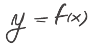
Grafic, un semnal sau o funcție matematică poate fi reprezentată astfel:
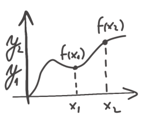
Știm că orice funcție matematică poate fi descompusă într-o sumă de funcții polinomiale.
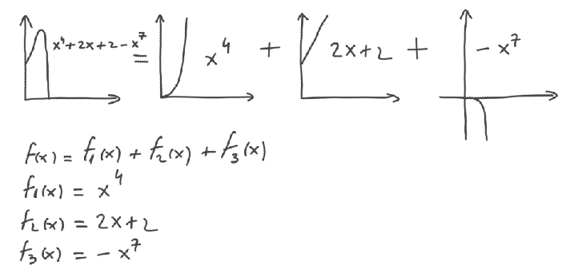
Mai știm că orice semnal poate fi descompus prin analiză de tip Fourier într-o sumă de sinusoide (frecvențe, sau armonici).
f(x) = f1(x) + f2(x) + f3(x)
f(x) = sin(x) + sin(2x) + sin(7x)
In graficul de mai jos:
semnalul cu roșu reprezintă f(x)
semnalul cu albastru, sin(x), reprezintă frecvența fundamentală a semnalului roșu
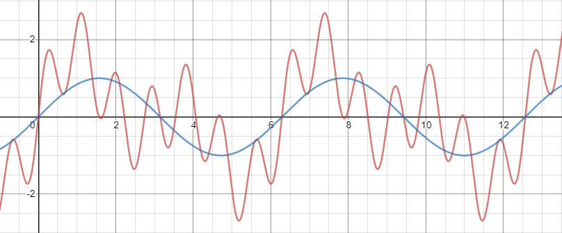
In graficul de mai jos, este ilustrat semnalul f1(x) = sin(x), componentă a semnalului roșu.
Această componentă are valoarea 1 și constituie frecvența fundamentală a semnalului roșu. O valoare mică a frecvenței fundamentale denotă că semnalul are o variație lentă în timp.
In graficul de mai jos este redat semnalul f2(x) = sin(2x), care reprezintă o frecvență secundară (o armonică) a semnalului roșu.
Frecvența acestuia are valoarea 2. Denotă o variație rapidă în timp.
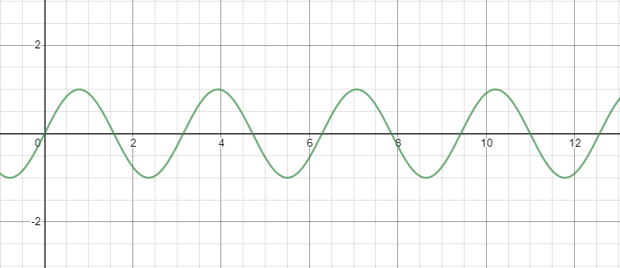
Mai jos, f3(x) = sin(7x), frecvență secundară (armonică) a semnalului roșu.
Frecvența acestuia are valoarea 7. Denotă variații foarte rapide ale semnalului în timp.
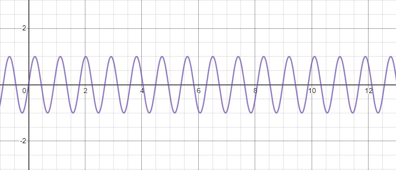
Toate aceste 3 semnale, când sunt combinate formează semnalul roșu.
Un semnal are o frecvență fundamentală care arată evoluția în timp a valorii urmărite. Peste această frecvență fundamentală se pot suprapune o serie de armonici (frecvențe secundare) care fac ca semnalul să înceapă să aibă variații locale.
Un alt mod de a gândi acest lucru este că avem un semnal de bază care este modulat în timp de alte semnale secundare.
Putem sa filtrăm frecvențele secundare (variațiile rapide) pentru a obține semnalul de bază (variație lentă) - cel care ne arată evoluția reală a valorii (variabile în timp) pe care o urmărim, cel care ne arată evoluția reală a sistemului.
In exemplul de mai sus, semnalul cu albastru, sin(x), reprezintă frecvența fundamentală și arată evoluția reală. Frecvențele secundare cum ar fi sin(2x) și sin(7x) introduc variații locale în jurul valorii frecvenței fundamentale.
3.2 Cutii negre. Sisteme.
Un sistem, sau un proces, este ca o cutie neagră.
Avem o intrare și o ieșire. In sistem intră un semnal. Cutia transformă semnalul de intrare și generează un semnal de ieșire (evoluția în timp a sistemului).
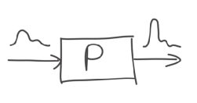
Un sistem poate amplifica semnalul de intrare, îl poate menține constant, sau îl poate diminua. Nu știm ce se intâmplă înăuntru.
Dacă vrem să ne asigurăm că la ieșire obținem valoarea dorită (valoarea de referință) și nu una prea mare, trebuie să modificăm semnalul de intrare.
Pentru a duce sistemul la valoarea dorită (la obiectiv) este nevoie să intervenim asupra semnalului de intrare.
Primul lucru pe care trebuie să îl facem este să măsuram valoarea ieșirii - y(t)
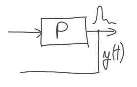
Putem compara valoarea măsurată la ieșirea din sistem y(t), cu valoarea referinței (a obiectivului dorit) r(t). Diferența dintre ieșire și referință ne dă eroarea de reglare e(t) = r(t) - y(t)
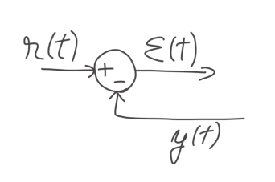
Dacă sistemul este aproape de referința setată rs, valoarea erorii va fi mică. Dacă sistemul este departe de referință, valoarea erorii va fi mare. Pe măsură ce sistemul se apropie de referință, valoarea erorii scade în timp.
Putem vizualiza acest lucru în mod grafic dacă desenăm semnalul erorii și evoluția sa în timp.
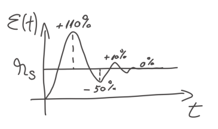
Știind care este eroarea de reglare putem proiecta un alt sistem, o altă cutie care să genereze un nou semnal de intrare în proces, un semnal care să țină cont de eroare și să deplaseze întregul proces, întregul sistem, către atingerea valorii de referință.
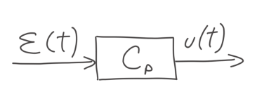
Această nouă cutie poartă denumirea de regulator sau de Compensator. Are ca intrare semnalul erorii și ca ieșire un nou semnal care este calculat astfel încât să fie minimizată eroarea rezultată din procesul care trebuie reglat. Acest nou semnal calculat, devine acum semnalul de intrare pentru Procesul care trebuie reglat.
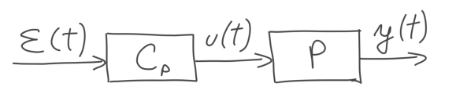
Schema finală a sistemului de reglare automată arată în felul următor:
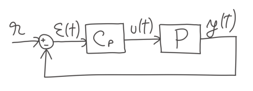
Când diferența dintre ieșirea sistemului y(t) și referința setată r este mare (ε(t) mare) și compensația u(t) calculată de regulatorul Cp este mare pentru a putea readuce sistemul, procesul P, la valoarea ieșirii dorite, la valoarea stabilită ca și referință, la valoarea stabilită ca și obiectiv în cel mai scurt timp posibil.
3.3. Agenți patogeni contra agenți umani (conștienți)
Odată ce un agent patogen a pătruns în organism cauzând ca temperatura acestuia să crească, sistemul imunitar reacționează. Agenții umani conștienți încep să își schimbe comportamentele și stilul de viață pentru a se apăra în mod eficace și pentru a putea lupta eficient contra noului intrus. Ei renunță la activitățile non-esențiale și își concentrează toată energia și eforturile pe eliminarea agentului patogen din organism. Incep să evite contactele cu ceilalți agenți și cu celelalte celule din organism pentru a putea reduce riscul de infectare. Suplimentar își dezvoltă un înveliș protector care îi apără de pericole.
Această reacție, care survine în mod natural la agenții umani conștienți, îi ajută pe aceștia să se salveze și să salveze organismul din care fac parte. Intregul proces poate fi urmărit în mod vizual în figurile de mai jos:
Ziua 11: Momentul la care agentul patogen pătrunde în organism și temperatura organismului începe să creascăZiua 55: Momentul la care la care agenții umani conștienți încep să se apere
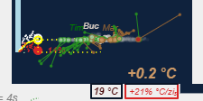
Ziua 78: Momentul la care temperatura organismului începe să scadă și la care agentul patogen începe să fie eliminat în mod treptat din organism
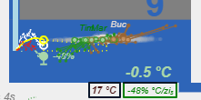
Bătălia nu a fost încheiată aici. Agenți umani conștienți trebuie să continue să facă același lucru care a dat rezultate și să lupte până când patogenul a fost complet eliminat din organism. In felul acesta pierderile sunt minimizate, iar organismul ajunge să se refacă și să se vindece într-un timp relativ scurt. Perioada de convalescență trece repede, iar recuperarea devine ușoară și rapidă.
Capitolul 4 - Determinarea și analiza stării de sănătate a organismului
4.1 Starea organismului. Semnale principale.
Pentru a putea determina care este starea de sănătate a întregului organism este suficient să analizăm două dintre semnalele pe care acesta le transmite:
Numărul Avariilor Detectate (numărul de agenți umani care s-au infectat )
Numărul Pierderilor (numărul de agenți umani care au pierdut lupta)
Acești doi parametri ne oferă o imagine completă asupra evoluției stării de sănătate a organismului.
Aceste două semnale sunt ilustrate grafic în figura de mai jos. Numărul avariilor detectate este marcat cu o linie gri în graficul de sus, iar cel al pierderilor cu o linie albastră în graficul de jos.
Cel mai important este numărul pierderilor pentru că acesta ne spune care este temperatura organismului.
Dacă temperatura crește, starea de sănătate a organismului se deteriorează. Dacă temperatura scade, înseamnă că agentul patogen începe să fie treptat eliminat din organism, iar organismul începe să se vindece.
Numărul avariilor detectate ne indică care va fi evoluția temperaturii pe un anumit orizont de timp.
Dacă alegem cu grijă acest orizont de timp, predicția evoluției va avea o acuratețe ridicată. Acest lucru permite agenților umani conștienți să anticipeze traiectoria agentului patogen și să i-o schimbe dinainte ca agentul patogen să poată provoca leziuni și pagube materiale. Avariile pe care agentul patogen le-ar fi putut crea sunt astfel evitate. Numărul de pierderi este minimizat. Temperatura scade, iar organismul intră pe o traiectorie de vindecare.
Dacă agentul patogen este lăsat să își continue traiectoria în mod nestingherit, temperatura crește, starea organismului se agravează, pierderile umane și materiale cresc, iar riscul aparițiilor de avarii la celelalte structuri din interiorul organismului crește deasemenea.
4.2 Analiza și prelucrarea semnalelor
Valoarea semnalelor se schimbă de la o zi la alta. Variația semnalului poate fi cauzată de evoluția semnalului în timp. Evoluția semnalului în timp conține mai multe componente:
Frecvența fundamentală (media semnalului) - aceasta tinde să aibă o evoluție mai lentă în timp
Frecvențe medii (armonici secundare, moduri) - acestea tind să aibă o evoluție mai rapidă în timp, cu variații de la o săptămână la alta
Frecvențe rapide (armonici secundare, moduri) - acestea tind să aibă o evoluție foarte rapidă cu variații de la o zi la alta
Cele 3 tipuri de componente au fost exemplificate în capitolul 3 cu ajutorul semnalului demonstrativ de mai jos:
In componența semnalului pot intra și perturbații sau zgomot. Zgomotul poate fi cauzat de erori de măsurare ale semnalului sau de variații aleatoare de la o zi la alta. Aceste variații aleatoare au o natură stocastică, probabilstică și respectă o distribuție gaussiană, naturală. Cu un anumit grad de probabilitate, ne putem aștepta ca ele să se regăsească într-un anumit interval. Cu alte cuvinte, chiar dacă amplitudinea zgomotului care intră în componența semnalului variază de la o zi la alta, ea variază între anumite limite.
Când lucrăm cu semnale și sisteme, preferăm să filtrăm zgomotul care intră în componența semnalului indiferent de natura lui. Perturbațiile și zgomotul tind să aibă frecvențe ridicate. Dorim să eliminăm din semnal acele frecvențe mari provenite de la zgomot și să păstrăm frecvențele joase și medii care ne dau un semnal mai curat și evoluția reală a sistemului.
Pentru a realiza acest lucru, am aplicat media ultimelor trei zile pentru a calcula valoarea semnalului la momentul de timp curent. In acest mod am obținut un semnal curat și fără zgomot. Alegând media pe 3 zile pastrăm frecvențele joase, medii și înalte, dar eliminăm frecvențele care aparțin perturbațiilor și ale zgomotului.
Am filtrat în acest mod (folosind media ultimelor 3 zile) atât semnalul avariilor detectate cât și semnalul pierderilor obținând linia cu gri, respectiv linia cu albastru din figura de mai jos.
4.2.1 Semnalul avariilor detectate
Semnalul avariilor detectate ne permite să aflăm care va fi traiectoria sistemului pe termen scurt și mediu. Ne permite să aflăm care este direcția în care acesta se îndreaptă, dacă situația urmează să se îmbunătățească sau dacă urmează să se înrăutățească. Analizând semnalul avariilor detectate mai putem afla și ritmul cu care situația se îmbunătățește sau se înrăutățește.
Ziua 317 (2 februarie 2020)
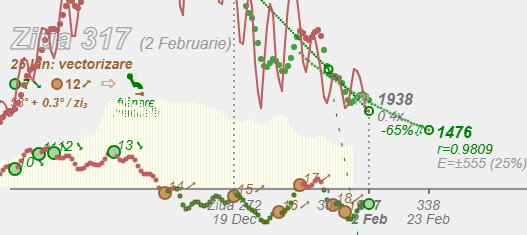
Deși nu putem detecta toate avariile care au loc în organism (în sistem), este suficient să detectăm un eșantion reprezentativ al acestora ca să ne facem o idee despre direcția în care se îndreaptă agenții umani conștienți pentru a contracara agentul patogen și pentru a minimiza pierderile suferite.
Traiectoriile agenților umani conștienți sunt redate cu o tentă de urmă albă în figura de mai jos. Urmele reprezintă emisiile rezultate în urma reacțiilor și a bătăliilor purtate. Direcția agenților umani este dată de vectorul deplasării.
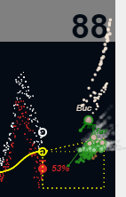
Fiecare cerculeț reprezintă un agent uman conștient care are un vector și o direcție de deplasare.
Agenții umani conștienți care câștigă teren împotriva noului intrus se deplasează spre stânga și coboară din ce în ce mai mult pentru a se apropia de agentul patogen și a-l elimina din organism. Nu doar dimensiunea lor scade, dar și numărul total al avariilor scade și implicit al pierderilor asociate cu acestea. Ei obțin o aură verde pentru victoriile obținute și pentru bunele intenții.
Agenții umani care pierd bătălii și suferă avarii considerabile, se deplasează spre dreapta și urcă în sus evitând să mai lupte pentru anumite perioade de timp. Cu alte cuvinte, bat în retragere. Ei cresc în dimensiuni (se umflă), iar numărul total al avariilor și implicit al pierderilor asociate crește. Ei obțin o aură maro (ca al unei frunze care a căzut din copac pe pământ), semn că pierderile sunt mari, și că mai au de lucru pentru ca mai apoi să revină în forță pe câmpul de bătălie.
Există o legătură directă între numărul avariilor detectate și numărul pierderilor. Rata de Pierderi/Avarii Detectate variază în timp. In primele 308 zile aceasta s-a situat în medie în jurul valorii de 2.4%. Incepând cu ziua 309 ea a început să crească și a ajuns la 2.5%. 2.5% dintre avariile detectate au devenit pierderi în ultimele 318 zile. Acest procent se poate modifica în timp în funcție de ferocitatea agentului sau a agenților patogeni dacă sunt mai mulți. Agenții patogeni au propriile strategii și tactici de apărare. In condiții adverse de mediu au tendința să se transforme si să dezvolte mecanisme și arme noi de atac care pot crește impactul suferit de către agenții umani neatenți. Este un impact mai mare față de cel pe care agenții patogeni îl aveau în versiunea lor inițială.
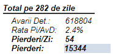
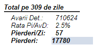
Cu cât agenții patogeni trăiesc mai mult în interiorul organismului și infectează mai mulți agenți umani, și cu cât condițiile de mediu din organism devin mai adverse, cu atât patogenii se încăpățânează mai mult și dezvoltă noi strategii de atac și de infiltrare în rândul agenților umani.
Din acest motiv, agenții umani conștienți, nu lasă agenții patogeni să câștige teren și își iau toate măsurile de protecție și precauție în mod timpuriu pentru a preîntâmpina avansul agenților patogeni. Agenții umani conștienți se luptă și se îndreaptă către inamic în permanență pentru a caștiga teren în fața inamicului și pentru a nu-l lăsa să se transforme și să devină un adversar mai redutabil decât era la început. Nu îl lasă nici măcar să respire.
In prima imagine, agentul patogen nu este lăsat să respire de către agenții umani conștienți. Patogenul are gura închisă.
Ziua 78 (8 iunie 2020)
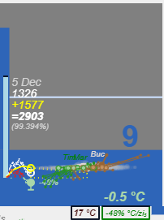
In a doua imagine, agentul patogen este lăsat să respire de către agenții umani. Patogenul are gura până la cer.
Ziua 239 (16 noiembrie 2020)
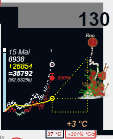
Dacă eșantionul de avarii detectate ne spune că avem o creștere, există o probabilitate extrem de ridicată să avem o creștere a agenților umani infectați în tot organismul, chiar și în locurile unde nu putem detecta fiecare avarie în parte care are loc.
Dacă eșantionul ne indică că avem o scădere, probabilitatea este foarte mare ca în tot organismul direcția să fie una bună, în sensul scăderii numărului total al avariilor. Nu ne spune însă dacă starea organismului per ansamblu se ameliorează sau se degradează. Putem avea o scădere a numărului de avarii detectate, iar cu toate acestea starea de sănătatea a organismului să se degradeze pe termen lung. Acest lucru se întamplă când scăderea numărului de avarii detectate nu este suficient de mare sau când aceasta nu este susținută suficient de mult. Această situație apare în mod prevalent la temperaturi mari înregistrate în organism. Așa cum se poate observa și în figura de mai jos, avariile scad, pierderile cresc.
Ziua 282 (29 decembrie 2020)
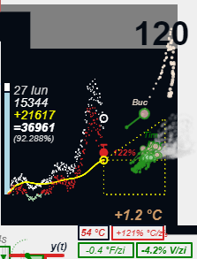
Indiferent de cât de reprezentativ este eșantionul pe care îl avem, el are oricum are o natură mai mult orientativă. Semnalul avariilor detectate ne indică cu o anticipație de câteva săptamani (3 săptămâni) care este direcția generală în care se îndreaptă agenții umani și care este traiectoria acestora. Ne spune în ce direcție se vor îndreapta agenții umani conștienți în viitorul apropiat (peste 21 de zile) dacă nu se schimbă condițiile de mediu.Agenții umani conștienți, fiind agenți raționali, își doresc și fac în permanență eforturi pentru a se îndrepta în direcția bună. Ei nu ezită și nu fac compromisuri. Sunt agili și se reorientează în permananță spre direcția bună, spre direcția scăderii avariilor detectate. Sănătatea întregului organism este în joc și depinde numai de ei.
Ziua 317 (2 februarie 2020)
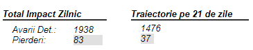
4.2.2 Semnalul pierderilor
Semnalul pierderilor este cel care ne arată evoluția reală a stării de sănătate a organismului. El ne indică cu certitudine dacă starea acestuia s-a îmbunătățit sau s-a agravat. Tot el este cel care ne indică care va fi evoluția organismului pe termen mediu (6 luni de zile) și care va fi numărul total de pierderi de la acel moment dacă agentul patogen este lăsat liber să facă ravagii. Ne arată ce se va întampla dacă se mențin condițiile actuale.
Ziua 317 (2 februarie 2020)
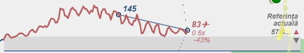
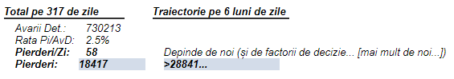
Dacă condițiile sunt prielnice dezvoltării agentului patogen, pe termen mediu și lung acesta va crește în dimensiuni. Va intra la cură de îngrășare și va avea mai multă forță. Agenții umani se sperie și bat în retragere. Agenții umani suferă pierderi și avarii considerabile.
Ziua 231 (8 noiembrie 2020)
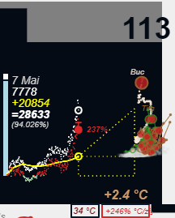
Dacă intervenim asupra condițiilor de mediu și creeăm obstacole în calea dezvoltării patogenului, pe termen mediu și lung acesta va crește mai lent în dimensiuni. Va fi însă suficient de bine îndestulat încât să continue să crească și să facă ravagii în rândul agenților umani pe termen mediu și lung.
Ziua 293 (9 ianuarie 2021)
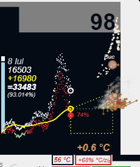
Dacă condițiile sunt neprielnice pentru patogen, el va începe să scadă din dimensiuni. Va intra la cură de slăbire. Pentru că nu a mâncat, mușchii lui vor începe să se atrofieze și nu va mai avea forță să lupte. Agenții umani conștienți îl vor elimina relativ repede din organism.
Ziua 67 (28 mai 2020)
Semnalul pierderilor ne spune care este temperatura organismului. O temperatură ridicată creează tot felul de probleme și duce la pierderi masive pe toate planurile. O temperatură ridicată este mai greu de controlat. Efortul depus de agenții umani conștienți și stresul prin care aceștia trec crește semnificativ cu fiecare grad în plus. Spus altfel, este mult mai ușor pentru agenții umani conștienți să lupte împotriva patogenului la o temperatura scăzută decât la una înaltă.
La temperaturi înalte agenții patogeni se simt ca la ei acasă, iar agenții umani conștienți se îngrijorează și simt cum presiunea crește. In anumite situații presiunea răbufnește cu putere prin supapa de evacuare creeând și mai multe pagube și avarii. La temperaturi înalte, durează mai mult până când agenții umani conștienți reușesc să scadă din nou temperatura și să vindece și să repare organismul.
Ziua 242 (19 noiembrie 2020)
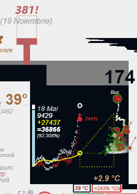
La temperaturi joase, agenții umani conștienți pot elimina agenții patogeni fără prea mult efort.Agenții patogeni tind să se sperie când sunt în inferioritate numerică și se ascund sau dispar de pe plaiurile agenților umani conștienți în ritm accelerat. Respectă legile fizicii și ritmul proceselor naturale. Organismul se vindecă în mod natural.
Ziua 80 (10 iunie 2020). Agenții patogeni încep să se risipească speriați. Temperatura scade.
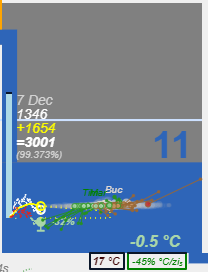
Motivul pentru care vrem să ne uităm totuși și la semnalul avariilor este pentru că acesta ne permite detectăm din timp (21 de zile) schimbările care pot surveni în traiectoria stării generale de sănătate a organismului (semnalul pierderilor). Agenții pot astfel lua măsuri timpurii pentru a preveni deraierea sistemului într-o direcție nefavorabilă (traiectorie ascendentă a temperaturii) și pentru a reduce ritmul de creștere al agentului patogen. Ei vor lua toate măsurile necesare din timp pentru a readuce sistemul pe o traiectorie favorabilă de vindecare (traiectorie descendentă a temperaturii)
Putem anticipa din timp (cu 21 de zile înainte) intențiile agentului patogen și astfel îi putem curma planurile nefaste. Agentul patogen credea că scapă ușor și neobservat, dar agenții umani conștienți sunt mai inteligenți decât acesta și urmăresc schimbările care intervin în traiectoria semnalului avariilor detectate (semnalată în graficele de mai jos fie cu linie albastră punctată atunci când merge în sus, fie cu linie verde punctată atunci când merge în jos).
Ziua 131 (31 iulie 2020) - proiecția pe 21 de zile ne arată că agentul patogen urmează să crească în ritm accelerat, iar numărul avariilor detectate în rândul agenților umani să se tripleze. Agenții umani nu realizează la acest moment pericolul care îi paște. Ei încă mai cred că pot menține situația sub control fără a schimba nimic din comportamentul lor.
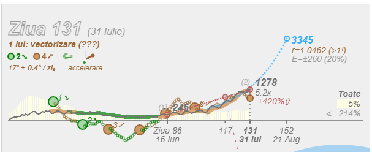
Ziua 281 (28 decembrie 2020) - proiecția pe 21 de zile ne arată că agenții umani au realizat cât de mare este pericolul și și-au concentrat forțele pentru a preveni ca agentul patogen să mai crească. Ei câștigă acum teren în ritm accelerat, punând frâne importante în calea expansiunii agentului patogen. Agentul patogen continuă să crească, dar la un ritm mai lent. Numărul avariilor detectate se va reduce cu aproape jumătate dacă agenții umani conștienți continuă în același ritm.
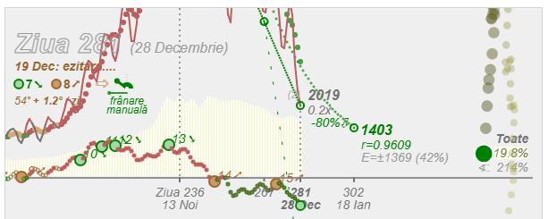
Ziua 297 (13 ianuarie 2020) - proiecția pe 21 de zile ne arată că de sărbătorile care au avut loc în urmă cu 2 săptămâni agenții umani au lăsat ușor garda jos, iar agenții patogeni au profitat de ocazie și au început să se strecoare printre ei. Agenții patogeni conduc acum din nou câmpul de bătălie, agenții umani urmând să înregistreze avarii suplimentare și noi pierderi dacă nu ridică din nou garda sus.
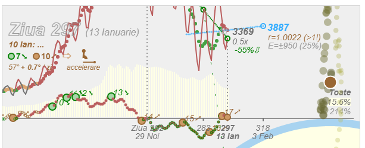
4.3 Dinamica de propagare și de stingere a avariilor
Semnalul pierderilor este cel care ne spune care este situația reală și starea generală a sistemului. Semnalul pierderilor este afectat de o întârziere de aproximativ 30-45 de zile. Cu alte cuvinte, semnalul pierderilor este în urma semnalului avariilor detectate cu aproximativ 4-6 săptămâni.
Când se schimbă condițiile de mediu pe câmpul de bătălie, acest lucru este reflectat aproape instantaneu în semnalul avariilor detectate, orizontul de proiecție de 21 de zile fiind foarte sensibil la schimbările care intervin în evoluția agenților umani conștienți, atunci când aceștia încep să monteze capcane și obstacole în calea agentului patogen. Orizontul de proiecție de 21 de zile al semnalului avariilor detectate este sensibil și atunci când agenții umani încep să lase garda jos și în loc să mai coboare și să se îndrepte spre agentul patogen pentru a-l înfrunta, ei încep să urce și să se îndepărteze de acesta.
Semnalul pierderilor fiind în urma semnalului avariilor detectate vom vedea de abia peste 30-45 de zile care este impactul schimbărilor condițiilor de mediu. Agenții umani conștienți trebuie să aibă răbdare și să asigure că pun obstacole grele în calea agentului patogen, cel puțin până când văd că acesta începe să reacționeaze și dimensiunea lui începe să scadă, până când temperatura întregului organism începe să scadă.
Ziua 75 La data de 5 iunie 2020 vedem urmările condițiilor de mediu din urmă cu 45 de zile, de la 21 aprilie 2020.
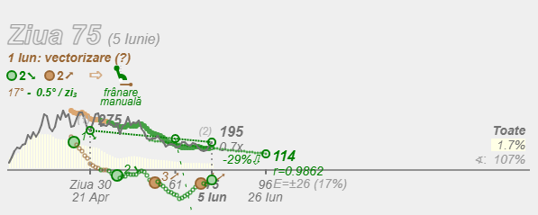
Ziua 80 (10 iunie 2020). Agentul patogen începe să scadă.
Când temperatura începe să scadă, agenții umani conștienți nu se culcă pe o ureche. Acesta este momentul potrivit pentru ca ei să atace agentul patogen care este deja slăbit și poate fi eliminat rapid din organism.
Teorema Shannon-Nyquist ne spune că pentru a putea captura frecvența fundamentală a unui semnal este nevoie să eșantionăm semnalul respectiv cu o frecvență cel puțin dublă față de cea a semnalului pe care îl analizăm.
Dacă durata medie de vindecare pentru un agent uman avariat este de 2 săptămâni (14 zile), înseamnă că frecvența fundamentală (frecvența naturală) a sistemului de propagare și de stingere a avariilor este undeva la 4 săptămâni (30 de zile).
Dacă mai adăugăm modul în care se propagă agentul patogen în rândul comunităților de agenți umani, mod cauzat de structura încrengăturilor și a interacțiunilor dintre agenți, ar mai trebui să mai adăugăm încă 2 săptămâni (14 zile) la cele 4 ale frecvenței fundamentale deja găsite prin teorema lui Shannon-Nyquist.
In total obținem 6 săptămâni (aproximativ 45 de zile), orizontul de timp necesar pentru a vedea efectele schimbării condițiilor de mediu sau implementării de noi măsuri de apărare și protecție împotriva agentului patogen. Cu alte cuvinte durează aproximativ 45 de zile să izolăm o zonă avariată de la apariția primei avarii detectate si să stingem incendiul provocat de agentul patogen. Mecanismul funcționează și în sens invers. Dacă agenții umani lasă garda jos, durează aproximativ 45 de zile să vedem efectul în totalitatea sa și consecințele sau urmările unei decizii luate poate în mod pripit. In momentul în care agenții umani realizează acest lucru, este deja prea târziu pentru că agentul patogen a caștigat teren semnificativ. Din acest motiv toate măsurile pe care agenții umani conștienți le iau trebuie să fie luate cu o anticipație de 45 de zile. Agenții trebuie să se gândească în permanență în avans, unde vor să se situeze în următoarele 45 de zile. Ei trebuie să acționeze acum pentru a obține rezultate favorabile și notabile peste aproximativ 45 de zile. Ei gândesc mereu în avans și în perspectivă.
Pentru simplificare, am putea gândi că frecvența fundamentală (frecvența naturală) sau dinamica fenomenului de propagare și de stingere a avariilor are o constantă de timp undeva la 45 de zile. [Nota Bene 1]
Ziua 9 - 54 (31 martie - 15 mai 2020) Condițiile de mediu de la 31 martie provoacă stoparea creșterii numărului total de avarii detectate și inversarea trendului la 15 mai. La 15 mai, numărul avariilor detectate înregistrează o scădere de 17% față de valoare înregistrată pe 31 martie. Avariile detectate au scăzut de la 264 la 220.
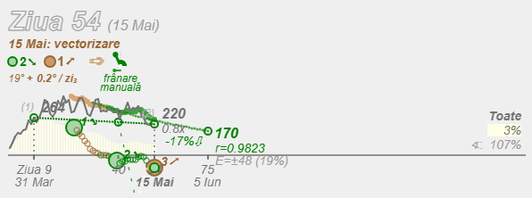
Ziua 26 - 71 (17 aprilie - 1 iunie 2020) Condițiile de mediu de la 17 aprilie accelerează descreșterea numărului total de avarii detectate la data de 1 iunie. Avem o decelerare. La 1 iunie numărul avariilor detectate înregistrează o scădere de 65% față de valoarea înregistrată pe 17 aprilie. Avariile detectate au scăzut de la 396 la 139.
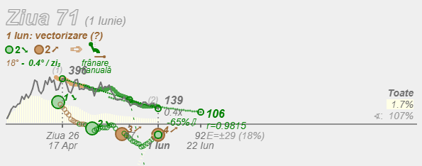
Ziua 40 - 85 (1 mai - 15 iunie 2020) Condițiile de mediu de la 1 mai duc la scăderea numărului total de avarii detectate la data de 15 iunie. La 15 iunie numărul avariilor detectate înregistrează o scădere de 20% față de valoarea înregistrată pe 1 mai. Avariile detectate au scăzut de la 317 la 254. Avariile detectate la 15 iunie sunt mai numeroase decât cele inregistrate la 1 iunie. Incep să se vadă și o parte din efectele schimbării condițiilor de mediu care au avut loc la data de 1 iunie.
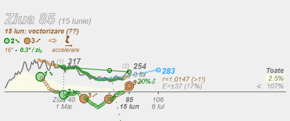
Ziua 56 - 101 (17 mai - 1 iulie 2020) Condițiile de mediu de la 17 mai duc la creșterea numărului total de avarii detectate la data de 1 iulie. La 1 iulie, numărul avariilor detectate înregistrează o creștere de 57% față de valoare înregistrată pe 17 mai. Avariile detectate au crescut de la 208 la 328. Incep să se vadă și o parte din efectele schimbării condițiilor de mediu care avut loc la data de 15 iunie.Ziua 71 - 116 (1 iunie - 16 iulie 2020) Condițiile de mediu de la 1 iunie duc la creșterea numărului total de avarii detectate la data de 16 iulie. La 16 iulie numărul avariilor detectate înregistrează o creștere de 393% față de valoare înregistrată pe 1 iunie. Avariile detectate au crescut de la 139 la 685. Au crescut de aproape 5 ori. Creșterea este accelerată. Incep să se vadă și o parte din efectele schimbării condițiilor de mediu care au avut loc la data de 1 iulie.
Nota Bene 1:
[Pentru simplitate, în acest studiu am folosit termenul de "constantă de timp" a întregului sistem cu sensul de durată a "regimului tranzitoriu" a întregului sistem, în analogie incompletă cu dinamica sistemelor liniare de ordin1 cu 1 singur pol stabil plasat în planul stâng. Știm că acest tip de sisteme au un regim tranzitoriu care durează aproximativ 4 constante de timp, ceea ce ar indica o "constantă de timp" echivalentă a sistemului analizat aici de aproximativ 11 zile, care se apropie de durata medie de vindecare a agenților umani. Subliniez din nou că este o analogie incompletă deoarece sistemul analizat în acest studiu este un sistem neliniar cu poli dinamici în timp care îl pot face să fie fie stabil (să scadă exponențial către 0), fie instabil (să crească exponențial) la momente diferite de timp.]
Capitolul 5 - Modelare sistemică
5.1 Funcții de transfer
Un sistem liniar poate fi reprezentat astfel:
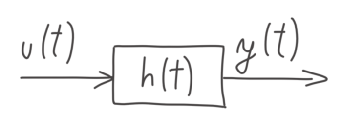
El are o intrare u și o iesire y.
Funcția de transfer h a sistemului caracterizează transformările care au loc în interiorul sistemului pentru a preschimba semnalul de intrare u în semnalul de ieșire y.
Când stimulăm un sistem cu un impuls Dirac, acesta răspunde cu funcția lui de transfer.
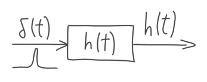
Impulsul Dirac este definit ca având o valoare infinită în origine și 0 în rest. Aria de sub graficul semnalului dat de impulsul Dirac (integrala semnalului) este marginită și egală cu 1.
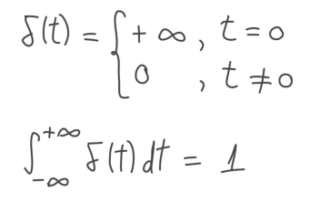
Definiția de mai sus caracterizează forma continuă a semnalului impulsului Dirac. Forma discretizată a impulsului Dirac este redată mai jos:
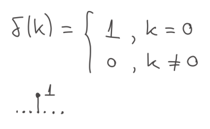
In domeniul discret, valoarea impulsului Dirac în origine este 1, și 0 în rest.
1 agent patogen care avariază 1 agent uman constituie impulsul care stimulează întreg sistemul (organismul). Acesta declanșează reacția și răspunsul sistemului (funcția de transfer a organismului).
Pentru calcula a ieșirea (răspunsul) sistemului la un semnal de intrare este nevoie să calculăm produsul de convoluție între semnalul de intrare și funcția de transfer a sistemului.
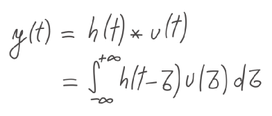
5.2 Sisteme liniare de ordinul 1 și ordinul 2
Când stimulăm un sistem liniar de ordinul 1 cu o funcție (semnal) de tip treaptă el răspunde în felul următor:
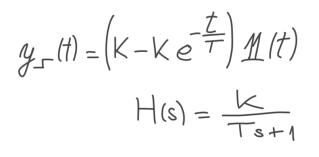
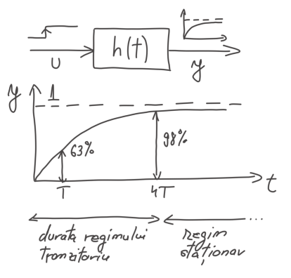
Durează aproximativ 4 constante de timp T pentru ca acesta să atingă valoarea de regim staționar. Această durată reprezintă durata regimului tranzitoriu.
Durata aproxmiativă a regimului (timpului) tranzitoriu pentru un sistem liniar de ordinul 1 poate fi calculată cu formula:
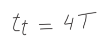
Când stimulăm un sistem liniar de ordinul 2 cu o funcție treaptă, el răspunde în felul următor:
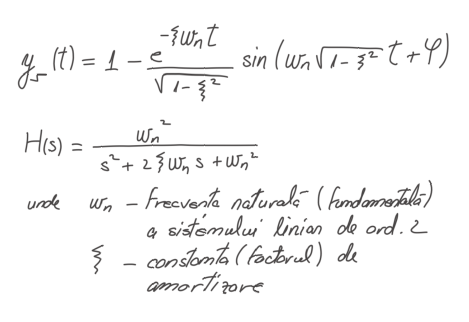
Putem calcula durata regimului (timpului) tranzitoriu folosind următoarea formulă:
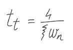
Constanta de amortizare ζ și frecvența naturală wn (frecvența fundamentală, de rezonanță) a sistemului depind de structura sistemului.
Impreună, aceste două constante care depind de structura și de configurarea internă a sistemului vor conduce la un timp tranzitoriu mai lung sau mai scurt, timpul după care sistemul (în extensie, organismul) atinge valoarea de regim staționar (în extensie la un sistem în buclă de reacție, valoarea referinței setate).
5.3 Transformata LaPlace. Translatarea semnalelor din domeniul timp în spațiul numerelor complexe.
In teorie, dacă cunoaștem funcția de transfer a unui sistem, putem calcula răspunsul sistemului la orice semnal de intrare folosind produsul de convoluție.
In practică, produsul de convoluție este un operator matematic dificil de utilizat pentru a lucra cu semnale și sisteme. Calculul integral nu este distractiv mai pentru nimenea…
Transformata Laplace mută (translatează) un semnal din domeniul timp în spațiul numerelor complexe. Acest lucru ne permite să analizăm și să efectuăm mai ușor operațiile matematice care intervin în lucrul cu semnale și sisteme.
Ca și bonus, atunci când folosim Transformata LaPlace, operația matematică de produs de convoluție în domeniul timp, devine o simplă multiplicare algebrică (o simplă înmulțire) în domeniul numerelor complexe. Operațiile matematice cu semnale și sisteme se transformă în simple operații algebrice cu polinoame (adunări, scăderi, înmulțiri și împărțiri de polinoame). Știm să lucrăm cu polinoame.
Transformata LaPlace (pentru sisteme cauzale) este definită astfel:
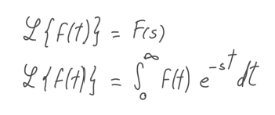
, unde s reprezintă un număr complex de forma s=σ + jω.
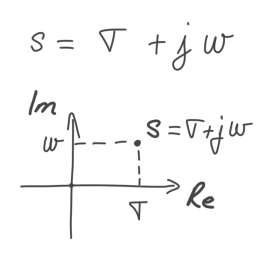
σ reprezintă partea reală a numărului complex s, iar ω reprezintă partea imaginară a acestuia.
Putem aplica definiția transformatei Laplace pentru a converti (translata) semnale din domeniul timp în echivalentul lor din domeniul complex.
1. O funcție exponențială (semnal exponențial) eat devine în spațiul numerelor complexe:
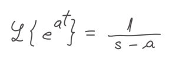
Polinomul de la numitor are o singură rădăcină s=a, care poate fi reprezentată în planul numerelor complexe în modul următor:
Când a < 0 (număr negativ), semnalul (funcției exponențiale) este reprezentat ca un punct pe axa reală în planul stâng al numerelor complexe.
Când a > 0 (număr pozitiv), semnalul (funcției exponentiale) este reprezentat ca un punct pe axa reala în planul drept al numerelor complexe.
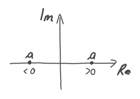
O funcție exponențială (semnal exponențial) eat poate fi reprezentată în domeniul timp astfel:
Când a < 0 (număr negativ), semnalul (funcția) este atenuat în mod exponențial.
Când a > 0 (număr pozitiv), semnalul (funcția) este amplificat în mod exponențial.
2. O funcție sinus (semnal sinusoidal) sin(at) devine în spațiul numerelor complexe:
Polinomul de la numitor are o 2 rădăcini s=±aj (+aj și -aj), care pot fi reprezentate în planul numerelor complexe în modul următor:
2 puncte echidistante față de origine pe axa imaginară (axa frecvențelor)
O funcție sinus (semnal sinusoidal) sin(at) poate fi reprezentat în domeniul timp astfel:
Valoarea lui a determină frecvența sau perioada cu care se repetă semnalul în timp.
3. O funcție treaptă (semnal treaptă) 1(t) devine în spațiul numerelor complexe:
Polinomul de la numitor are o singură rădăcină s=0, care poate fi reprezentată în planul numerelor complexe în modul următor:
1 punct în originea planului de numere complexe
O funcție treaptă (semnal treaptă) 1(t) poate fi reprezentată în domeniul timp astfel:
4. Combinând un semnal sinusoidal cu un semnal exponențial (o funcție sinus cu una exponențială) în domeniul timp obținem:
Un semnal sinusoidal de frecvență ω atenuat în timp când - σ < 0 (număr negativ)
Un semnal sinusoidal de frecvență ω amplificat în timp când - σ > 0 (număr pozitiv)
Cele două tipuri de semnale (sinusoidă atenuată, respectiv amplificată) pot fi reprezentate în planul complex astfel:
1 punct situatîn planul stâng la distanța -σ de axa imaginară - cu cât punctul este mai distanțat de axa imaginară în planul stang, cu atât semnalul sinusoidal este mai atenuat
1 punct situatîn planul drept la distanța +σ de axa imaginară - cu cât punctul este mai distanțat de axa imaginară în planul drept, cu atât semnalul sinusoidal este mai amplificat
Atunci când aplicăm transformata LaPlace unui semnal sau funcției de transfer a unui sistem obținem un număr complex de forma s = σ + jω care poate fi reprezentat în planul numerelor complexe sub forma unui punct de coordonate σ și ω.
In planul complex, axa Imaginară reprezintă axa frecvențelor conținute în semnal, iar axa Reală reprezintă gradul de atenuare sau amplificare al frecvențelor conținute în semnal.
In teoria sistemelor , aceste puncte din spațiul complex poartă denumirea de poli . Polii reprezintă punctele din spațiul numerelor complexe unde transformata LaPlace ia o valoare infinită deoarece polinomul de la numitorul funcției se anulează.
Cu alte cuvinte, polii reprezintă rădăcinile polinomului de la numitor al unui semnal reprezentat (translatat) în spațiul numerelor complexe .
Cu cât polii funcției de transfer al unui sistem sau ai unui semnal sunt mai depărtați de axa Imaginară în planul stâng, cu atât sistemul este mai stabil, iar semnalul mai atenuat (amortizat exponențial) în timp.
Cu cât polii funcției de transfer al unui sistem sau ai unui semnal sunt mai depărtați de axa Imaginară în planul drept, cu atât sistemul este mai instabil, iar semnalul mai amplificat (amplificat exponențial) în timp.
Când polii sunt plasați chiar pe axa Imaginară fără nici o componentă Reală (σ=0) - semnalul sau sistemul are un caracter oscilatoriu în timp.
Capitolul 6 - Stabilizarea sistemului (organismului)
6.1 Analiza răspunsului la impuls. Determinarea funcției de transfer (dinamice)
Am văzut că un sistem poate fi descris de 3 parametrii: un semnal de intrare u(t), o funcție de transfer h(t), și un semnal de iesire y(t) (răspunsul generat de sistem la semnalul de intrare).
Dacă considerăm funcția de transfer a sistemului ca fiind și ea tot un semnal, putem aplica transformata LaPlace tutoror semnalelor pentru a translata întregul sistemul analizat în spațiul numerelor complexe. Obținem următoarea diagramă:
unde semnalele U(s), H(s), Y(s) reprezintă echivalentul în complex al semnalelor u(t), h(t), y(t) din timp.
Preferăm să lucrăm în spațiul complex pentru că acesta ne permite să analizăm mai ușor caracteristicile sistemului și gradul său de stabilitate.
Funcția de transfer a unui sistem poate fi calculată dacă cunoaștem semnalul de intrare U(s) și pe cel de ieșire Y(s) prin împărțirea lui Y(s) la U(s):
Am văzut mai devreme că dacă stimulăm un sistem cu un impuls Dirac, el va răspunde cu funcția sa de transfer:
In cazul sistemului (organismului) analizat în aceste studiu, impulsul Dirac inițial a fost dat de către 1 agent patogen care a avariat 1 agent uman. Acesta a declanșat o reacție în lanț în întreg sistemul (organismul).
Sistemul nostru a răspuns la impuls cu un semnal al avariilor detectate care a crescut exponențial.
Impulsul nr.1:
Primul impuls primit a avut loc în urmă cu aproape 6 săptămâni, pe data de:
26 februarie 2020 - Număr avarii detectate: 1
Ziua 23 - Reacție de amplificare: 14 aprilie 2020 - Număr avarii detectate: 296 Proiecție pe 21 de zile: 1062.
Am văzut în capitolul 4 că durează aproximativ 6 săptămâni (45 de zile) pentru a vedea în întregime efectele și răspunsul sistemului la schimbări ale condițiilor de mediu sau la schimbări ale semnalului de intrare. Aceste schimbări pot fi gîndite și ca impulsuri care stimulează sistemul (organismul) într-un sens sau altul. Vom analiza aici impulsurile care au generat creșteri, ținând cont de frecvența fundamentală a sistemului (dinamica de propagare a agentului patogen și de stingere a avariilor) de 45 zile.
Impulsul nr.2:
Al doilea impuls, survenit prin schimbarea condițiilor de mediu (care au facilitat propagarea agentului patogen și au amplificat reacția), a avut loc pe data de: 15 mai 2020 - Număr avarii detectate: 220 Proiecție pe 21 de zile: 170
Ziua 99 - Reacție de amplificare: 29 iunie 2020 - Număr avarii detectate: 295 Proiecție pe 21 de zile: 783.
Impulsul nr.3:
Al treilea impuls, survenit prin schimbarea condițiilor de mediu (care au facilitat propagarea agentului patogen și au amplificat reacția), a avut loc pe data de: 1 iunie 2020 - Număr avarii detectate: 220 Proiecție pe 21 de zile: 106
Ziua 116 - Reacție de amplificare: 16 iulie 2020 - Număr avarii detectate: 685 Proiecție pe 21 de zile: 1111.
Impulsul nr.4:
Al patrulea impuls, survenit prin schimbarea condițiilor de mediu (care au facilitat propagarea agentului patogen și au amplificat reacția), a avut loc pe data de: 15 iunie 2020 - Număr avarii detectate: 254 Proiecție pe 21 de zile: 283
Ziua 130 - Reacție de amplificare: 30 iulie 2020 - Număr avarii detectate: 1230 Proiecție pe 21 de zile: 3238.
Impulsul nr.5:
Al cincilea impuls, survenit prin schimbarea condițiilor de mediu (care au facilitat propagarea agentului patogen și au amplificat reacția), a avut loc pe data de: 1 septembrie 2020 - Număr avarii detectate: 920 Proiecție pe 21 de zile: 1019
Ziua 208 - Reacție de amplificare: 16 octombrie 2020 - Număr avarii detectate: 4018 Proiecție pe 21 de zile: 9042.
Impulsul nr.6:
Al șaselea impuls, survenit prin schimbarea condițiilor de mediu (care au facilitat propagarea agentului patogen și au amplificat reacția), a avut loc pe data de: 15 septembrie 2020 - Număr avarii detectate: 971 Proiecție pe 21 de zile: 1213
Ziua 222 - Reacție de amplificare: 30 octombrie 2020 - Număr avarii detectate: 6123 Proiecție pe 21 de zile: 8593.
In toate cazurile de mai sus se observă că sistemul pleacă de la o bază relativ stabilă și răspunde la impuls cu o creștere exponențială. Cu cât baza de plecare (numarul avariilor detectate la acel moment) este mai mare, cu atât creșterea exponențială este mai accentuată.
Deducem de aici că avem de-a face cu un sistem neliniar care este în mod intrinsec instabil și care are un pol pozitiv plasat în planul drept al spațiului complex.
Cu alte cuvinte, în momentul în care agentul patogen este lăsat "să umble liber" prin rândul agenților umani, acesta se propagă în mod fulminant, cauzând o creștere exponențială a avariilor detectate, și implicit a numărului de pierderi (în funcție de rata avarii detectate/pierderi de la momentul respectiv).
6.2 Curbe (funcții) exponențiale. Factorul R.
Răspunsul la impuls al sistemului analizat în acest studiu ia forma unei curbe (funcții) exponențiale.
Ziua 130 Impulsul dat sistemului pe 15 iunie 2020 (prin schimbarea condițiilor de mediu) determină răspunsul (reacția sistemului) de la 30 iulie 2020. Numărul avariilor detectate crește de aproape 5 ori (de la 254 la 1230).
O funcție exponențială poate fi definită astfel: f(t) = bt
b - baza funcției exponențiale (factorul de multiplicare succesivă)
t - exponentul funcției (timpul care a trecut)
O funcție exponențială mai poate fi scrisă și astfel: f(t)=b*b*...*b [b înmulțit de t ori]
Când baza b este subunitară (b < 1), functia exponențială descrește deoarece ceva subunitar (de ex. 0,3) înmulțit cu ceva tot subunitar (de ex. 0,3) dă tot ceva subunitar și mai mic decât ambele numere care au fost înmulțite (de ex. 0.09).
Când baza b este supraunitară (b > 1), funcția exponențială crește deoarece ceva supraunitar (de ex. 1,3) înmulțit cu ceva tot supraunitar (de ex. 1,3) dă tot ceva supraunitar și mai mare decât ambele numere care au fost înmulțite (de ex. 1.69).
Numărul ridicat de multiplicări (înmulțiri) face ca rezultatul sa crească sau să descrească în mod accelerat (exponențial).
Acest lucru se poate observa grafic când desenăm 2 funcții exponențiale cu baza subunitară (graficul stâng din figura de mai jos). Cu cât baza este mai mică și subunitară (b < 1), cu atât descreșterea și curbura funcției este mai accentuată.
Când desenăm 2 funcții exponențiale cu bază supraunitară (b>1) (graficul drept din figura de mai sus), creșterea sau curbura funcției este mai accentuată cu cât baza este mai mare.
In acest studiu am notat baza unei funcții exponențiale cu r (factorul r), iar gradul de creștere sau descreștere cu R (factorul R = r - 1)
Factorul R mai poate fi gândit și ca un fel de dobândă compusă (daca îl transformăm în diferență procentuală față de unitatea 1):
R% = (r-1) * 100
Cu cât dobânda (factorul R%) este mai mare în sens pozitiv (R>0, r>1), cu atât acumularea în timp este mai mare (și numărul avariilor detectate crește).
Ziua 204 (12 octombrie 2020) Factor R pozitiv (+4.9%), baza r supraunitară (1.049).
Avarii detectate: 2822 Proiecție pe 21 de zile: 8075
Cu cât dobânda (factorul R%) este mai mare în sens negativ (R<0, r<1), cu atât dezacumularea în timp (a agentului patogen din organism) este mai mare (și numărul avariilor detectate scade).
Ziua 63 (24 mai 2020) Factor R negativ (-3.95%), baza r subunitară (0.9605).
Avarii detectate: 162 Proiecție pe 21 de zile: 69
Baza b (notată cu r în acest studiu) determină gradul de curbură al funcției exponențiale (bt). Ea depinde de condițiile de mediu și de structura internă a organismului, de modul de configurare al agenților umani (în sensul creeări de obstacole în calea propagării agentului patogen, sau dimpotrivă în sensul încurajării propagării agentului patogen).
6.3 Stabilizare prin compensare externă
Știm din teoria sistemelor că pentru a putea stabiliza un sistem care este în mod intrinsec instabil, este nevoie ca:
fie să schimbăm structura internă a sistemului (modul de configurare al agenților umani în organism) - pentru a muta polul instabil al sistemului din planul drept în planul stâng - sistemul devine stabil în mod intrinsec.
Odată ce realizăm acest lucru, sistemul răspunde la impulsuri viitoare cu o funcție atenuată în mod exponențial (pol intrinsec sistemului [procesului] situat în planul stâng)
fie să proiectăm un compensator extern care adăugat în buclă de reacție negativă este capabil să mute polii sistemului combinat Compensator-Proces-Bucla de Reacție undeva în planul stâng.
Această variantă prezintă un dublu avantaj pentru că:
pe de o parte asigurăm stabilizarea sistemului
și pe de altă parte, sistemul va urmări acum referința setată (în cazul organismului nostru, ne dorim să setăm referința la valoarea 0 [0 avarii, 0 pierderi])
Sumarizând:
1. Așa cum am arătat în primul capitol, Compensatorul acționează în sensul minimizării erorii de reglare ε(t) față de valoarea referinței setate r(t) (ε(t)=r(t)-y(t)).
2. Acționând astfel, Compensatorul este capabil să mute polii întregului sistem în planul stâng astfel încat sistemul să fie unul stabil.
3. Când polii sistemului sunt în planul stâng, sistemul urmarește referința setată, iar descreșterea erorii de reglare ε(t) (și implicit a ieșirii y(t)) este una exponențială.
4. Compensatorul atinge obiectivele de reglare și stabilizare a sistemului (a organismului).
6.4 Analiza algoritmului de reglare
Vom analiza în cele ce urmează algoritmul de reglare al compensatorului extern pentru a determina dacă acesta reușește să atingă obiectivele de reglare și de stabilizare a sistemului (organismului).
Este vorba despre analiza compensatorului din practică (cutia), care diferă de cel ideal.
Ca și convenție de notare pentru acțiunile compensatorului am folosit următoarele:
Limitare
- Cutia limitează fluxul de agent patogen (bucla de reacție este închisă într-o oarecare măsură, iar patogenul începe să se stingă - creșterea avariilor detectate începe să se atenueze sau avariile detectate încep să scadă exponențial)
- Cutia introduce stabilitate în sistem și mută polul în partea stangă Ziua 40 (1 mai 2020) - Compensatorul limitează fluxul (debitul apei de la intrare)
Deschidere
- Cutia deschide fluxul de agent patogen (bucla de reacție este deschisă într-o oarecare măsură, iar patogenul începe să se propage liber - creșterea avariilor detectate începe să se accentueze vertiginos)
- Cutia introduce instabilitate în sistem și mută polul în partea dreaptă Ziua 85 (15 iunie 2020) - Compensatorul deschide fluxul (debitul apei de la intrare)
Parametrii pe care îi urmărim la fiecare moment de timp în care compensatorul acționează sunt următorii:
Parametru
Descriere
Baza de plecare a avariilor
- numărul avariilor detectate la momentul respectiv
- (numărul avariilor detectate filtrat de variații rapide și zgomot pe un orizont de timp de 21 de zile, frecvența medie a semnalului)
Proiecția pe 21 de zile
numărul avariilor care vor fi detectate peste 21 de zile dacă condițiile de mediu se pastrează
Viteza (V%)
- cu care avariile detectate se amplifică sau se atenuează
- factorul R sau "dobânda compusă" [(factor r-1)*100] care determină gradul de curbură al unei funcții exponențiale
- Factorul R este calculat prin regresie matematică pe un orizont de timp de 21 de zile si reflectă frecvența medie a semnalului avariilor detectate
- "Dobânda compusă" (factorul R%) poate fi:
- cu care avariile detectate se amplifică sau se atenuează
- este dată de derivata de ordinul 1 a vitezei
pozitivă (>0), viteza se modifică în sensul creșterii avariilor detectate
negativă (<0), viteza se modifică în sensul descreșterii avariilor detectate
Ieșirea sistemului (y)
numărul de pierderi înregistrate la momentul respectiv (starea de sănătate reală a organismului, temperatura organismului)
Referința dinamică (r)
- media pierderilor înregistrate de la prima intrare a agentului patogen în organism
- starea de sănatate reală a organismului
- temperatura organismului
Eroare de reglare (ε)
diferența dintre referința dinamică r și ieșirea sistemului y la momentul respectiv de timp
Tensiunea acvatică (y/r)
- Funcția de transfer între referința dinamică și ieșirea sistemului (amplificarea/accelerarea reacției cu un filtru aplicat pe 7 zile)
supraunitară (>1), temperatura organismului (numărul pierderilor) continuă sa crească
subunitară (<1), temperatura organismului (numărul pierderilor) scade
Poziția polului
-unde baza funcției bt depinde de structura sistemului și de condițiile de mediu la momentul respectiv de timp sau de configurarea agenților umani
pol în partea dreaptă - instabilitate - creștere exponențială (bt, b>1)
pol în partea stangă - stabilitate - atenuare exponențială (bt, b<1)
Acțiunea compensatorului
deschidere - instabilitate - amplificare reacție - deplasare pol spre dreapta
închidere - stabilitate - atenuare reacție - deplasare pol spre stânga
Efectul compensatorului
în sensul creșterii erorii de reglare
în sensul menținerii erorii de reglare
în sensul reducerii erorii de reglare
Momente de timp analizate:
Ziua 24 (15 aprilie 2020)
Parametru
Valoare
Observații
Baza de plecare a avariilor
305
Proiecția pe 21 de zile
880
Viteza (V%)
+3.8%
Accelerația (°F)
-
indisponibilă la acest moment de timp
Ieșirea sistemului (y)
22
Referința dinamică (r)
13.7
Eroare de reglare (ε)
8
60%
Tensiunea acvatică (y/r)
1.6x
+68%
Poziția polului
dreapta
Acțiunea compensatorului
limitare
Efectul compensatorului
în sensul reducerii erorii de reglare
Ziua 40 (1 mai 2020)
Parametru
Valoare
Observații
Baza de plecare a avariilor
317
Proiecția pe 21 de zile
264
Viteza (V%)
-0.81%
Accelerația (°F)
-
indisponibilă la acest moment de timp
Ieșirea sistemului (y)
31
Referința dinamică (r)
17.3
Eroare de reglare (ε)
14
80%
Tensiunea acvatică (y/r)
1.5x
+51%
Poziția polului
stânga
Acțiunea compensatorului
limitare
Efectul compensatorului
în sensul reducerii erorii de reglare
Ziua 54 (15 mai 2020)
Parametru
Valoare
Observații
Baza de plecare a avariilor
220
(243)
Proiecția pe 21 de zile
170
Viteza (V%)
-1.77%
Accelerația (°F)
-0.14
Ieșirea sistemului (y)
18
Referința dinamică (r)
18.8
Eroare de reglare (ε)
-1
-5%
Tensiunea acvatică (y/r)
1.2x
+22%
Poziția polului
stânga
Acțiunea compensatorului
deschidere
Efectul compensatorului
în sensul creșterii erorii de reglare
Ziua 71 (1 iunie 2020)
Parametru
Valoare
Observații
Baza de plecare a avariilor
139
(153)
Proiecția pe 21 de zile
106
Viteza (V%)
-1.85%
Accelerația (°F)
+0.26
Ieșirea sistemului (y)
13
Referința dinamică (r)
17.5
Eroare de reglare (ε)
-5
-26%
Tensiunea acvatică (y/r)
0.6x
-33%
Poziția polului
stânga
Acțiunea compensatorului
deschidere
Efectul compensatorului
în sensul creșterii erorii de reglare
Ziua 85 (15 iunie 2020)
Parametru
Valoare
Observații
Baza de plecare a avariilor
317
(211)
Proiecția pe 21 de zile
254
Viteza (V%)
+1.47%
Accelerația (°F)
+0.23
Ieșirea sistemului (y)
16
Referința dinamică (r)
16.3
Eroare de reglare (ε)
-1
-4%
Tensiunea acvatică (y/r)
0.7x
-27%
Poziția polului
dreapta
Acțiunea compensatorului
deschidere
Efectul compensatorului
în sensul creșterii erorii de reglare
Ziua 101 (1 iulie 2020)
Parametru
Valoare
Observații
Baza de plecare a avariilor
328
(371)
Proiecția pe 21 de zile
632
Viteza (V%)
+2.68%
Accelerația (°F)
-0.17
Ieșirea sistemului (y)
18
Referința dinamică (r)
16.1
Eroare de reglare (ε)
2
+13%
Tensiunea acvatică (y/r)
0.9x
-1%
Poziția polului
dreapta
Acțiunea compensatorului
deschidere
Efectul compensatorului
în sensul creșterii erorii de reglare
Ziua 132 (1 august 2020)
Parametru
Valoare
Observații
Baza de plecare a avariilor
1292
(1409)
Proiecția pe 21 de zile
3507
Viteza (V%)
+4.66%
Accelerația (°F)
-0.06
Ieșirea sistemului (y)
37
Referința dinamică (r)
17.6
Eroare de reglare (ε)
19
+108%
Tensiunea acvatică (y/r)
1.5x
+58%
Poziția polului
dreapta
Acțiunea compensatorului
limitare
Efectul compensatorului
în sensul reducerii erorii de reglare
Ziua 163 (1 septembrie 2020)
Parametru
Valoare
Observații
Baza de plecare a avariilor
920
(1115)
Proiecția pe 21 de zile
1019
Viteza (V%)
-0.45%
Accelerația (°F)
-0.06
Ieșirea sistemului (y)
47
Referința dinamică (r)
22.1
Eroare de reglare (ε)
25
+114%
Tensiunea acvatică (y/r)
2x
+101%
Poziția polului
stânga
Acțiunea compensatorului
deschidere
Efectul compensatorului
în sensul creșterii erorii de reglare
Ziua 177 (15 septembrie 2020)
Parametru
Valoare
Observații
Baza de plecare a avariilor
971
(1181)
Proiecția pe 21 de zile
1213
Viteza (V%)
-0.13%
Accelerația (°F)
-0.04
Ieșirea sistemului (y)
36
Referința dinamică (r)
23.5
Eroare de reglare (ε)
13
+54%
Tensiunea acvatică (y/r)
1.6x
+61%
Poziția polului
dreapta
Acțiunea compensatorului
deschidere
Efectul compensatorului
în sensul creșterii erorii de reglare
Ziua 232 (9 noiembrie 2020)
Invelișul protector (și centura de siguranță) devin obligatorii în toate spațiile populate de agenți umani
Parametru
Valoare
Observații
Baza de plecare a avariilor
6643
(8749)
Proiecția pe 21 de zile
21725
Viteza (V%)
+4.65%
Accelerația (°F)
+0.18
Ieșirea sistemului (y)
115
Referința dinamică (r)
33.8
Eroare de reglare (ε)
81
+240%
Tensiunea acvatică (y/r)
3.5x
+250%
Poziția polului
dreapta
Acțiunea compensatorului
limitare
Efectul compensatorului
în sensul reducerii erorii de reglare
Ziua 309 (25 ianuarie 2021)
Parametru
Valoare
Observații
Baza de plecare a avariilor
2029
(2342)
Proiecția pe 21 de zile
1301
Viteza (V%)
-2.09%
Accelerația (°F)
-0.47
Ieșirea sistemului (y)
71
Referința dinamică (r)
57.3
Eroare de reglare (ε)
14
+24%
Tensiunea acvatică (y/r)
1.39x
+40%
Poziția polului
stânga
Acțiunea compensatorului
deschidere
Efectul compensatorului
în sensul creșterii erorii de reglare
Momentele de timp analizate sunt sumarizate în următorul tabel:
Moment
Referința dinamică
Ieșirea sistemului
Avarii detectate (frecvența medie)
Poziție pol
Acțiunea Comp.
Efect
Atingere obiective reglare
Ziua 24 (15 aprilie 2020)
13.7
22
305
dreapta
limitare
în sensul reducerii erorii de reglare
DA (introducere de stabilitate)
Ziua 40 (1 mai 2020)
17.3
31
317
stânga
limitare
în sensul reducerii erorii de reglare
DA (introducere de stabilitate)
Ziua 54 (15 mai 2020)
18.8
18
243
stânga
deschidere
în sensul creșterii erorii de reglare
NU (introducere de instabilitate)
Ziua 71 (1 iunie 2020)
17.5
13
153
stânga
deschidere
în sensul creșterii erorii de reglare
NU (introducere de instabilitate)
Ziua 85 (15 iunie 2020)
16.3
16
211
dreapta
deschidere
în sensul creșterii erorii de reglare
NU (introducere de instabilitate)
Ziua 101 (1 iulie 2020)
16.1
18
371
dreapta
deschidere
în sensul creșterii erorii de reglare
NU (introducere de instabilitate)
Ziua 132 (1 august 2020)
17.6
37
1409
dreapta
limitare
în sensul reducerii erorii de reglare
DA (introducere de stabilitate)
Ziua 163 (1 septembrie 2020)
22.1
47
1115
stânga
deschidere
în sensul creșterii erorii de reglare
NU (introducere de instabilitate)
Ziua 177 (15 septembrie 2020)
23.5
36
1181
dreapta
deschidere
în sensul creșterii erorii de reglare
NU (introducere de instabilitate)
Ziua 232 (9 noiembrie 2020)
33.8
115
8749
dreapta
limitare
în sensul reducerii erorii de reglare
DA (introducere de stabilitate)
Ziua 309 (25 ianuarie 2021)
57.3
71
2342
stânga
deschidere
în sensul creșterii erorii de reglare
NU (introducere de instabilitate)
Sumar:
4 din cele 11 momente de timp analizate au fost luate în sensul reducerii erori de reglare si introducerii de stabilitate în sistem.
7 din cele 11 momente de timp analizate au fost luate în sensul creșterii erorii de reglare și introducerii de instabilitate în sistem.
In doar 4 din cele 11 cazuri analizate, compensatorul a acționat (cu efecte notabile asupra poziționării polului în planul stâng) în sensul atingerii obiectivelor de reglare automată (stabilizarea sistemului și reducerea temperaturii la 0).
6.5 Concluzii și soluții pentru stabilizarea sistemului
Concluzionăm din cele arătate mai sus că algoritmul de reglare al compensatorului (cutia) funcționează în mod deficitar și defectuos (în mod neinteligent):
acesta a ratat mai multe șanse de atingere a obiectivelor de reglare și de stabilizare a sistemului
nu a reușit să urmărească nici referința dinamică (referința actuală, media curentă a pierderilor), și nici referința implicită sugerată de bunul-simț (temperatura 0°C, număr avarii 0, număr pierderi 0)
a condus la creșterea temperaturii în organism și la agravarea stării de sănatate, creeând o stare de neliniște și îngrijorare în rândul agenților umani conștienți. Valoarea medie a temperaturii a depășit în luna ianuarie 2021 57 °C.
Ce soluții există?
Am văzut că există două variante de stabilizare a unui sistem care este în mod intrinsec instabil:
schimbarea structurii interne a sistemului(pol negativ în planul stâng)
proiectarea unui compensator extern în buclă de reacție negativă care:
să urmărească ce se întamplă la ieșirea din sistem
să anticipeze evoluția pe termen scurt (21 de zile), pe termen mediu (45 de zile) și pe termen lung (6 luni)
Să acționeze pe toate cele 3 dimensiuni (structură sistem, buclă reactie, compensator) astfel încât să reducă eroarea de reglare și să atingă referința dinamică (media pierderilor), iar mai apoi pe cea implicită (0 avarii detectate, 0 pierderi la ieșire)
Cum varianta 2 a fost invalidată de acțiunile compensatorului pe orizontul de timp analizat, ne mai rămâne varianta numărul 1.
Schimbarea structurii interne a sistemului:
In acest scenariu, agenții umani conștienți se reconfigureză spațial în interiorul organismului astfel încât să deplaseze polul instabil al sistemului din planul drept în planul stâng.
In acest mod, sistemul devine mai stabil și mai robust la perturbații de orice natură (agenți patogeni, compensator incorect reglat, etc.)
Agenții umani conștienți trebuie să compenseze:
atât pentru instabilitatea intrinsecă a sistemului (organismului) produsă de către agentul patogen
cât și pentru instabilitatea introdusă în sistem de către compensatorul slab proiectat
Odată ce realizează acest lucru, sistemul va răspunde la impulsuri viitoare (cauzate fie de agenți patogeni, fie de compensatoare disfuncționale) cu o funcție atenuată în mod exponențial(pol intrinsec sistemului [procesului] situat în planul stâng)
Redăm mai jos două tipuri de structuri de configurare spațială a agenților umani conștienți:
Structură instabilă - pol în partea dreaptă - creștere exponențială a pierderilor și a avariilor
Structură stabilă - pol în partea stângă - scădere exponențială a pierderilor și a avariilor
Cu alte cuvinte, cu sau fără ajutorul compensatorului extern, agenții umani conștienți își iau toate măsurile de protecție și de apărare în fața agentului patogen.
Ei se reorganizează în mod natural (păstrând distanța spațială) pentru a putea lupta în mod eficient împotriva agentului patogen.
Ei își ajustează și își schimbă traiectoriile astfel încât să creeze condiții de mediu adverse pentru agentul patogen, în modul acesta reușind să reducă temperatura și să salveze întregul organism...
La nivel macro, acțiunile lor vor duce la schimbarea structurii sistemului per ansamblu stabilizându-l în mod natural și plasându-l pe o traiectorie care scade în mod exponențial.
Agenții umani conștienți evită acele activități care sunt ne-esențiale în condiții de febră ridicată (când întreg organismul se simte rău și suferă).
Agenții umani evită acele activități non-compatibile cu o luptă eficientă împotriva agentului patogen.
Atâta timp cât agentul patogen continuă sa fie prezent în organism, agenții umani conștienți continuă să lupte în mod inteligent și eficace cu acesta (chiar și atunci când inteligența algoritmilor de reglare și a canalelor racordate la
compensatorului extern lasă de dorit uneori)
Capitolul 7 - Calcul predictiv
7.1 Introducere
Deja am aflat că frecvența fundamentală (frecvența naturală) a sistemului este de 30-45 de zile. Cu alte cuvinte dinamica fenomenului de propagare și de stingere a avariilor are o "constantă de timp" în jurul valorii de 30-45 de zile.
Acest lucru ne permite să analizăm în mod retroactiv care a fost evoluția semnalului avariilor detectate și să stabilim care este trendul.
Trendul este pe creștere, sau este pe descreștere?
Cât de mult au crescut numărul avariilor detectate, sau cât de mult au scăzut?
Se va menține acest trend?
In figura de mai jos, cu linia roșu punctat, este ilustrat trendul calculat în mod retroactiv pe ultimele 45 de zile
Cu o constantă de timp atât de mare (30-45 de zile), șansele sunt destul de mari ca trendul să se mențină măcar "în linii mari". Avariile detectate vor continua să crească sau să descrească în direcția indicată de linia trendului.
Trendul ne poate totuși duce în eroare. Dacă am fi avut de-a face cu creșteri liniare, atunci trendul calculat pe ultimele 45 de zile ar fi fost un bun indicator asupra evoluției viitoare a numărului de avarii detectate.
Dacă creșterea ar fi una liniară, ne-am aștepta ca dacă condițiile de mediu se mențin constante, și creșterea să se mențină constantă.
Ca și exemplu, dacă acest lucru ar fi adevărat, ne-am aștepta ca peste 45 de zile numărul avariilor detectate să se tripleze, să-și mențină ritmul de creștere și să ajungă la un număr total de 1500 de cazuri detectate.
Ziua 110. Baza de plecare: 587 avarii detectate. Trend crescător 3.1x. Ne așteptăm ca avariile detectate să se tripleze peste 45 de zile (în 6 săptămâni).
In realitate, nu trec nici măcar 2 săptămâni (14 zile) și numărul avariilor aproape că se dublează ajungând la 1087. Acest lucru se întamplă deoarece sistemul nostru este unul neliniar.
O schimbare mică la semnalul de intrare în sistem duce la o creștere disproporțional de mare la semnalul de ieșire din sistem. Agenții patogeni se multiplică și se răspândesc în ritm exponențial.
Cu alte cuvinte, o schimbare mică a condițiilor de mediu nu va genera o schimbare proporțională în numarul avariilor detectate. Ea va genera o schimbare disproporțională.
Ziua 124. Număr avarii detectate: 1087. Din cauza creșterii neliniare numărul avariilor se dublează în doar 14 zile (2 săptămâni).
Din acest motiv ne dorim să calculăm proiecția în timp a semnalului avariilor detectate folosind curbe exponențiale pentru a putea aproxima cu o acuratețe mai ridicată care va fi evoluția semnalului în următoarele 21 de zile. Ne propunem să devenim mai preciși în estimări.
O curbă poate crește în ritm exponențial sau poate descrește în ritm exponențial.
Curba proiecței pe 21 de zile este ilustrată cu albastru punctat atunci când aceasta crește, și cu verde punctat atunci când aceasta descrește.
Ziua 202 (10 octombrie 2020). Creștere exponențială. Baza r=1.04 (>1) R=+4.19%Ziua 283 (30 decembrie 2020). Descreștere exponențială. Baza r=0.95 (<1) R=-4.09%
Așa cum am văzut în capitolul precedent, ecuația matematică a unei curbe (funcții) exponențiale arată în felul următor: f(t) = bt (= rt)
Când baza este mai mare ca unu (b>1, supraunitară), curba crește în ritm exponențial (r>1)
Când baza este mai mică ca unu (b<1, subunitar), curba descrește în ritm exponențial (r<1)
Când baza este unu (b=1), curba se menține la o valoare constantă, nici nu crește, nici nu descrește (r=1)
Ne dorim ca baza să fie întotdeauna subunitară (r<1, R<1), pentru a menține descreșterea exponențială până se atinge valoarea 0.
7.2 Metoda regresiei liniare (celor mai mici pătrate) pentru semnalul avariilor detectate
O astfel de curbă care să ne ajute să estimăm încotro ne îndreptăm (traiectoria semnalui avariilor detectate, traiectoria agenților umani), poate fi calculată relativ ușor folosind metoda regresiei liniare (celor mai mici pătrate).
Dacă avem o serie de puncte care ne indică evoluția unui semnal în timp, este suficient să trasăm o linie care să aproximeze cât mai bine traiectoria generală a tuturor punctelor așa cum se poate observa și în figura de mai jos:
Panta dreptei (unghiul dreptei) ne va spune care este trendul, rata creșterii sau descreșterii semnalului.
Ecuația unei drepte are forma: y = mx + n
Unde:
m = tangenta unghiului format de dreaptă cu axa Ox
n = ordonata (înalțimea) punctului de intersecție al dreptei cu axa Oy
Observăm este că este suficient să găsim aceste 2 numere, pe m și pe n, pentru a putea estima valoriile viitoare ale semnalui cu o acuratețe extrem de ridicată.
Putem determina atât pe m cât și pe n direct de pe grafic, dar cum găsim pe m și pe n în mod matematic?
Newton și Gauss, doi matematicieni celebri, ne-au învățat cum să realizăm acest lucru.
Ei au inventat metoda celor mai mici pătrate care încearcă să minimizeze distanța dintre linia care aproximează și punctele aflate la o distanță mai mică sau mare de aceasta. Acest lucru ne permite să determinăm apoi pe m și pe n.
Când suma totală a distanței dintre punctele semnalului și linia care le aproximează este cea mai mica cu putință (minimală), înseamnă că am gasit o bună aproximație a evoluției în timp pentru semnalul nostru.
Folosind o variantă ușor modificată a aceastei tehnici vechi de mai bine de 300 de ani, putem calcula parametrii unei unei curbe exponențiale bt (rt) care să aproximeze cât mai bine punctele semnalului avariilor detectate.
In felul acesta putem acum să estimăm cu ușurință și cu o acuratețe foarte ridicată care va fi evoluția semnalului urmărit, care va fi traiectoria avariilor detectate și implicit traiectoria agenților umani în următoarele 21 de zile.
Pentru a realiza acest lucru am ales un orizont de timp de (aproximativ) 21 de zile atât pentru calculul parametriilor de regresie cât și pentru calculul proiecției pe termen scurt.
Orizontul de timp de 21 de zile nu este ales întâmplător.
Pentru a putea realiza orice tip de analiză statistică predictivă, care să și aibă relevanță din punct de vedere statistic este nevoie de cel puțin 21 de puncte, de cel putin 21 de eșantioane ale semnalului.
Dacă folosim mai puține puncte, estimarea (predicția) nu mai are valoare, nu mai este relevantă din punct de vedere statistic. O predicție (sau analiză de trend) realizată folosind un interval de regresie de 2 săptamani este eronată, predicția (analiza de trend) neoferind nici un fel de informație suplimentară validă.
Simt nevoia să repet. Un orizont de timp mai mic de 21 de zile pentru calculul oricărui tip de trend sau proiecție nu are relevanță din punct de vedere statistic!
Agenții umani care suferă avarii, au o durată medie de vindecare de aproximativ 2 săptămâni. Așa cum am prezentat în capitolele precedente, știm din teoria analizei semnalelor că pentru a putea fi capabili să identificăm frecvența fundamentală a semnalului (lucru imperios necesar) este nevoie să eșantionăm semnalul la dublul frecvenței fundamentale (Teorema Shannon-Nyquist). De aici rezultă că pentru a putea determina evoluția reală a sistemului (frecvența sa naturală) trebuie să analizăm datele și semnalele pe orizonturi de timp de 4 săptămani, 4 săptămâni (28 de zile) constituind frecvența naturală a întregului organism, frecvența la care sistemul rezonează.
Ca și compromis între cele 2 deziderate, am ales un interval de 3 săptămâni (21 de zile) pentru a putea "prinde" în predicție și o parte din frecvențele medii-înalte care ne-ar putea indica mai din timp o anumită schimbare care intervine în evoluția sistemului (agentului patogen), pentru ca agenții umani conștienți să poată reacționa din timp, să poata interveni și să poată readuce sistemul (întregul organism) pe traiectoria care reduce temperatura și minimizează pierderile.
Acest compromis (de 3 săptămâni - 21 de zile) a fost unul de bun augur - acuratețea estimărilor (predicțiilor) avariilor detectate fiind una crescută pe termen scurt și mediu (21-45 zile).
Când calculăm proiecția unui semnal folosind un orizont de regresie de 21 de zile, pe lângă parametrii funcției exponențiale care aproximează evoluția semnalului în timp, mai obținem ca și bonus frecvența medie a semnalului analizat.
Frecvența medie este acea componentă (armonică) a semnalului care ne arată evoluția semnalului în timp și care nu este afectată de variații ale semnalului pe termen foarte scurt (variații zilnice) . Ea este afectată doar de acele schimbări ale semnalului care intervin pe ultimele 21 de zile. Am discutat pe larg despre ea în capitolele precedente. Formulat altfel, acest lucru ne permite să estimăm valoarea medie a avariilor la momentul de timp curent folosind un orizont de regresie de 21 de zile.
In figura de mai jos, proiecția calculată pe 21 de zile este ilustrată cu albastru punctat. Frecvența medie (valoarea medie) a semnalului avariilor detectate este ilustrată cu puncte verzi îngroșate. Semnalul avariilor detectate este redat de linia roșie.
Ziua 294 (10 ianuarie 2021). Proiecția pe 21 de zile și frecvența medie (valoarea medie) a semnalului avariilor detectate. Semnalul avariilor detectate.
7.3 Calcul predictiv pentru semnalul pierderilor (temperatura organismului)
Pentru semnalul pierderilor, am ales să folosesc media în timp a valorilor semnalului pentru a face estimări și proiecții pe termen mediu (3 luni) și lung (6 luni).
Media pierderilor (referința dinamică sau actuală) = Numărul total de pierderi înregistrate până la momentul curent / Numărul total de zile trecute de la înregistrarea primei pierderi
In primul grafic (cel de sus) din figura de mai jos, semnalul pierderilor este redat cu o linie roșie, iar media este redată sub forma unui bloc dreptunghiular de culoare gri.
Pe măsura ce media crește, crește și înălțimea blocului (nivelul apei). La ziua 280 (27 decembrie 2020) media este de 53.8 pierderi/zi.
Ziua 280 (27 decembrie 2020) media = 53.8
In al doilea grafic (cel de jos) din figura de mai sus, media este redată sub forma unei linii gri punctate. Fiind un grafic oglindit, aria dreptunghiului creat de cele 2 lini gri punctate până la ziua curentă ne dă numărul total de pierderi înregistrate până la acel moment de timp.
Nr. Total Pierderi ziua 280 = 281 * media = 281 * 53.8 = 15120 (aproximativ incluzând toate zecimalele; înmulțim media cu 281, deoarece semnalul începe cu ziua 0)
Deoarece media ne arată evoluția pierderilor pe termen mediu și lung, ne putem aștepta ca aceasta să nu se schimbe de pe o zi pe alta la fel de repede cum o face semnalul pierderilor:
Dacă semnalul pierderilor este mai mare decât media curentă, media va crește în timp pentru a atinge valoarea curentă a semnalului pierderilor
Dacă semnalul pierderilor este mai mic decât media curentă, media va scădea în timp pentru a atinge valoarea curentă a semnalului pierderilor
Acest lucru ne permite să determinăm cu un grad de certitudine suficient de ridicat, cam care va fi numărul total de pierderi peste 3 sau peste 6 luni de zile.
Pierderi noi pe 3 luni = 90 zile * media curentă = 90 * 53.8 = 4842
Pierderi noi pe 6 luni = 180 zile * media curenta = 90 * 53.8 = 9684
Nr. total de pierderi peste 6 luni = Nr. Total Pierderi Ziua 280 + Pierderi noi pe 6 luni
Nr. total de pierderi peste 6 luni = 15120 + 9684 = 24804
Se observă din graficul semnalului pierderilor că va mai dura încă mult timp până când semnalul va scădea suficient de mult încât să atingă media (trebuie să scadă de la 106 la 53.8)
Din acest motiv, ne putem aștepta ca peste 6 luni de zile numărul total de pierderi să fie de cel puțin 24806 (aproximativ).
Asta în ipoteza în care agenții umani nu intervin la timp pentru a scurta acest interval și pentru a reduce numărul total de pierderi...
Dacă agenții umani conștienți intervin la timp și atacă cu putere agentul patogen, semnalul pierderilor scade vertiginos, media este atinsă în timp record, iar mai apoi evoluția este una favorabilă cu o descreștere exponențială către 0.
Temperatura organismului ajunge să scadă până atinge valoarea 0. Agentul patogen este eliminat din organism.
Media fiind calculată pe un orizont larg de timp (de la început) nu este atât de susceptibilă la variațiile înregistrate pe termen scurt și mediu. Media pierderilor ne arată evoluția reală de ansamblu a stării de sănătate a organismului (temperatura).
Acest lucru se observă cu ușurință în graficul de mai jos. Semnalul cu linie galbenă până la inel (cerculeț galben) ne arată evoluția mediei în timp. Linia punctată cu galben de după inel ne arată proiecția semnalului pierderilor (temperatura) pe următoarele 6 luni de zile.
Ziua 280 (27 decembrie 2020)
Panta dreptei (unghiul cu orizontala) poate fi calculată folosind tensiunea acvatică filtrată pe 7 zile.
Tensiunea acvatică reprezintă funcția de transfer între valoarea referinței dinamice (media în timp) și ieșirea sistemului (pierderile înregistrate în ziua curentă):
Avem acum toate datele pentru a estima pierderile care vor fi înregistrate în următoarele 6 luni de zile.
Este suficient să calculăm aria suprafeței de sub graficul proiectat al semnalului mediei. Această suprafață este formată dintr-un dreptunghi și un triunghi dreptunghic:
Aria dreptunghiului ne dă numărul total de pierderi noi din următoarele 6 luni dacă media se menține constantă
Aria triunghiului ne dă numărul total de pierderi noi daca media continuă să crească în același ritm
Total pierderi noi pe 6 luni = Arie dreptunghi + Arie triunghi
Nefiind atât de susceptibilă la variații pe termen scurt și mediu, și putând observa evoluția stării reale de sănatate a
organismului pe termen lung , media (temperatura) ne ajută să
ne putem face o idee despre efortul real pe care agenții umani conștienți trebuie să îl depună și despre gradul măsurilor de protecție pe care aceștia trebuie să le implementeze pentru a poziționa sistemul pe o traiectorie favorabilă
care să reducă eroarea de reglare și pierderile în cel mai scurt timp posibil.
7.4 Viteze, accelerații, pedale de frână și de accelerație, dobânzi
Am văzut că în momentul în care calculăm gradul de curbură (r) al curbelor exponențiale (crescătoare sau descrescătoare) pe care evoluează semnalul avariilor detectate, obținem în mod automat și factorul R (forma procentuală a lui r):
R% = (r-1) * 100
Ziua 115 (15 iulie 2020) r=1.0315 R=+3.15%
Am vazut că factorul R poate fi gândit în analogie cu dobânda compusă. In fiecare zi care trece se adaugă o dobandă de în valoare de R% la numărul avariilor detectate:
când dobânda este mare și pozitiva (R%>0), creșterea avariilor detectate este exponențială
când dobânda este mare și negativă (R%<0), descreșterea avariilor detectate este exponențială
când dobânda este 0 (R%=0) avariile detectate nici nu scad, nici nu cresc, ele rămân constante
Factorul R mai poate fi gândit în analogie directă cu Viteza cu care reacția agentului patogen în organism se amplifică sau scade (cât de repede se amplifică numărul de avarii detectate, sau cât de repede se stinge numărul de avarii detectate)
Derivata de ordinul 1 a vitezei (dR, °F) ne dă accelerația cu care Viteza R crește sau scade. Ea ne arată:
dacă pedala de accelerație este apăsată (dR > 0°F), ceea ce duce la creșterea vitezei (creșterea factorului R, creștere exponențială) sau
dacă pedala de frână este apăsată (dR < 0°F) ceea ce duce la scăderea vitezei (descreșterea factorului R, descreștere exponențială)
Ziua 115 (15 iulie 2020) Pedală de accelerație apăsată (dR = +0.17°F > 0). Viteza V(R) creșteZiua 282 (29 decembrie 2020) Pedală de frână apăsată (dR = -0.4°F < 0). Viteza V(R) scade
Capitolul 8 - Translatare în spațiul bulgărilor de zăpadă
Dacă translatăm toate aceste semnale în spațiul bulgărilor de zăpadă de la munte, ne dăm seama că factorul R ne arată viteza de rostogolire a bulgărelui.
La viteze mari de rostogolire pozitive și spre dreapta (R>0), bulgărele crește în dimensiuni în mod exponențial (cu albastru putem vedea cât de mare va fi bulgărele peste 21 de zile)
La viteze mari de rostogolire negative și spre stânga (R<0), bulgărele se topește și scade în dimensiuni în mod exponențial (cu verde putem vedea cât de mic va fi bulgărele peste 21 de zile)
La viteze mici de rostogolire (R=0), bulgărele aproape că nu se mișcă și rămâne neschimbat în dimensiuni de la o zi la alta (razele soarelui nu mai ajung la el...)
Ziua 127 (27 iulie 2020) Bulgărele se rostogolește sprea dreapta cu viteză (R=+5.71%) și crește în dimensiuni în mod exponențial. In 21 de zile de la 1238, dacă nu se schimbă nimic în condițiile de mediu, va ajunge la 3766 avarii detectate.Ziua 309 (25 ianuarie 2021) Bulgărele se rostogolește sprea stânga cu viteză (R=-2.9%) și scade în dimensiuni în mod exponențial. In 21 de zile de la 2342, dacă nu se schimbă nimic în condițiile de mediu, va ajunge la 1301 avarii detectate.Ziua 323 (8 februarie 2021) Condițiile de mediu s-au schimbat. Bulgărele aproape că nu se mai rostogolește deloc sprea stânga (R=-0.3%) și ramâne aproape neschimbat în dimensiuni de la o zi la alta. In 21 de zile de la 2355, din cauză că nu mai primește suficiente raze solare, va ajunge la 2221 avarii detectate, asta dacă nu începe să ningă și să bată vântul spre dreapta...
Observații:
Un bulgăre de zăpadă mic care este lăsat liber să se rostogolească spre dreapta poate ajunge să provoace o avalanșă de proporții.
Ziua 82-127 (12 iunie - 27 iulie 2020) In 45 de zile, bulgărele crește de 5.4 ori, de la 218 la 1169.
Dacă bulgărele este mare și se mișcă încet, situația încă mai este controlabilă.
Ziua 179 (17 septembrie 2020) Timp de 45 de zile, bulgărele s-a menținut constant, în jurul valorii de 1160
Dacă bulgărele este mare și se rostogolește rapid către dreapta, situația este scăpată de sub control.
Ziua 184-229 (22 septembrie - 6 noiembrie 2020) In 45 de zile, bulgărele crește de 9.2 ori. de la 1033 de 9542.
Un bulgăre care se rostogolește rapid spre stânga are o oarecare margine de stabilitate, care îl face robust la zgomote și frecvențe nedorite, sau la comenzi greșite ale unui compensator extern care a devenit disfuncțional.
Ziua 309 (25 ianuarie 2021) bulgărele are o margine de stabilitate de 1042
Dacă nu există margine de stabilitate, atunci întregul sistem poate intra în stare de instabilitate (rezonanță pozitivă) când semnalul de intrare conține componente de frecvență nedorită. Bulgărele este dat peste cap spre dreapta din te miri ce...
Capitolul 9 - Translatare în spațiul dunelor de nisip
Evoluția ratei de creștere sau descreștere a bulgărelui de zăpadă (factorul R) poate fi urmărită în timp. Și ea la rândul ei poate fi reprezentată sub forma unui semnal care crește sau descrește în timp.
Ziua 309 (25 ianuarie 2021) Evoluția în timp a semnalului R plasat chiar sub semnalul avariilor detectate. Când R este pozitiv (R>0), semnalul apare deasupra axei orizontale.Când R este negativ (R<0), semnalul apare sub axa orizontală.
Dacă translatăm toate aceste semnale în spațiul dunelor de nisip din deșert...
Semnalul evoluției lui R în timp începe să semene cu o viețuitoare a deșertului care:
din când în când, iese la suprafață și se ridică în aer cauzând curburi și creșteri exponențiale ale avariilor detectate în rândul agenților umani (și implicit ale pierderilor)
când se bagă înapoi în nisip, apar descreșterile exponențiale
când stă pe linia nisipului avariile detectate se mențin constante
Agenții umani pot încuraja viețuitoarele deșertului să iasă la suprafață sau le pot descuraja ca acestea să nu mai iasă de sub nisip:
Când agenții umani trimit strigăte, se bat în piept, și trimit semnale și impulsuri de chemare, începe să bată vântul spre dreapta, iar viețuitoarele deșertului ies la suprafață. Agenți umani conștienți sunt îngrijorați pentru că numărul de avarii și pierderi crește.
Când agenții umani conștienți trimit strigăte, semnale și impulsuri de descurajare, începe să bată vântul spre stânga, iar viețuitoarele deșertului se sperie și rămân sub nisip. Agenții umani conștienți răsuflă ușurați pentru că întreaga comunitate este în siguranță.
Cel mai bine este ca agenții umani să le lase să trăiască sub nisip, acolo unde le este și locul. Când viețuitoarele deșertului sunt situate sub nisip, ele îi ajută pe agenții umani să lupte contra agentului patogen. Avântul agentului patogen scade, iar organismul începe să se vindece. Temperatura scade.
Când viețuitoarele deșertului ies la suprafață, ele se alătură agentului patogen și îl întăresc. Provoacă ravagii și avarii, iar temperatura crește.
Chiar dacă din când în cand ele mai primesc strigăte sau chemări de la anumiți agenți umani, agenții umani conștienți trebuie să le reamintească de fiecare date că este mai bine ca ele să rămână sub nisip.
In momentul în care viețuitoarele deșertului încep să pulseze, ele suferă schimbări de direcție, mai mari sau mai mici, în funcție de cât de tari sunt strigătele agenților umani.
Viețuitoarele deșertului se răzgândesc uneori să mai iasă la suprafață, iar alteori se hotărăsc că ar fi cazul să ia o gură de aer. Agenții umani conștienți nu trebuie să le lase să respire prea mult oxigen din aerul atmosferic, pentru că aerul pe care acestea îl respiră când sunt la suprafață iau din aerul respirabil al agenților umani...
Capitolul 10 - Translatare în spațiul aero-circular
Dacă translatăm toate aceste semnale dintr-un spațiu matematic liniar într-unul circular, în spațiul aerian tranzitat de avioane...
Ziua 290 (6 ianuarie 2021) Spațiul aerian tranzitat de avioane.Avioanele cu verde încearcă să aterizeze și să reducă numărul de avarii detectate. Avioanele cu roz sunt puternic avariate și fac tot ce pot pentru a reduce din altitudine și pentru a se apropia de aeroport în condiții meteorologice adverse cu rafale de vânt care bat spre dreapta.
Semnul și dimensiunea lui R (negativ sau pozitiv) determină planul în care zboară avionul (stâng sau drept) și distanța la sol față de originea aeroportului.
Semnul și dimensiunea lui R combinat cu semnul și dimensiunea derivatei de ordinul 1 al factorului r de curbură, dR, determină vectorul de deplasare al avionului în planul în care acesta se află:
Dacă vectorul este îndreptat spre stânga-jos, avionul coboară și reduce din altitudine
Dacă vectorul este îndreptat spre dreapta-sus, avionul urcă și ia altitudine
Dâra de fum pe care acesta o lasă în urmă ne arată traiectoria parcursă de avion de-a lungul timpului și cantitatea de combustibil pierdută.
Fiecare pilot își dorește să aterizeze și să ajunga înapoi la originea pistei de aterizare a aeroportului, acolo de unde a decolat:
Pilotul poate face acest lucru doar dacă zboară spre stânga și coboară încontinuu pentru a se apropia de pista aeroportului în capătul ei din stânga și pentru a putea ateriza în origine, acolo unde avariile și pierderile devin 0.
Dacă pilotul zboară spre dreapta, el câștigă altitudine și se îndepartează de pista de aterizare.
Ilustrăm mai jos o serie de manevre de zbor realizate de piloți de-a lungul timpului:
Avioane (piloți) care bat pasul pe loc și se învârt în jurul cozii
Ziua 324 (9 februarie 2021) Tim
Avioane (piloți) care au rămas desprinse de restul grupului și care suferă pierderi masive la altitudini apropiate de cele stratosferice
Acești piloți tind să se încăpățâneze cu vehemență în a executa acele manevre de zbor care dau rezultate solide
Nu și nu
Ei vor să admire priveliștea oferită de altitudinile înalte de la care survolează zonele de care aparțin
Ziua 286 (2 ianuarie 2021) Buc
Avioane (piloți) care își revin în mod spectaculos executând bucle aeriene cu întoarcere la 360 de grade
Ziua 321 (6 februarie 2021) Sib
Avioane (piloți) care au avut aterizări ratate și încearcă din nou
Ziua 310 (26 ianuarie 2021) Sat
Avioane (piloți) care preferă să survoleze la altitudini joase
Ziua 324 (9 februarie 2021) Tul
Piloții buni zboară întotdeauna la altitudini joase și nu ratează nici o șansă de a ateriza. Atunci când sunt împinși de vânt către dreapta și ajung în cadranul 1, ei revin rapid înapoi în stânga în cadranul 2. Aceștia încep să coboare către aeroport (sau către portavion) în mod susținut.
Piloții care zboară pe deasupra plaiurilor mioritice au fost dintotdeauna piloți buni și capabili.
Capitolul 11 - Translatare în spațiul organic
Dacă translatăm toate aceste semnale în spațiul organic al plaiurilor mioritice...
Ziua 323 (8 februarie 2021) Un organism pluricelular cu niveluri diferite de inflamație ale celulelor care îl alcătuiesc
In acest spațiu, agenții umani devin medici care operează pe celule diferite.
Semnalul avariilor detectate (frecvența medie) ne indică gradul de inflamare al celulei. Cu cât numărul de avarii detectate crește, cu atât celula se inflamează mai mult și crește în dimensiuni. Cu cât celula se inflamează mai mult, cu atât crește mai mult și numărul pierderilor asociate și temperatura.
Fiecare celulă contribuie la creșterea sau la descreșterea temperaturii întregului organism cu un anumit procent (%) din cele 100(%) disponibile.
Vectorul care pornește din nucleu ne arată direcția în care operează medicii. El depinde de factorul R și de viteza factorului R (derivata de ordinul 1, dR).
Când factorul R este pozitiv (R>0) medicii opereaza spre dreapta, iar inflamația crește exponențial, membrana celulei capătând culoarea maro.
Când inflamația crește peste o anumită valoare, citoplasma capătă culoarea roz.
Când viteza de creștere a inflamației depășește un prag critic, celula se înroșește. Dacă medicii nu intervin la timp, și nu încep să opereze spre stânga, celula se va inflama în mod necontrolat, iar numărul pierderilor asociate va crește vertiginos.
Când factorul R este apropiat de 0 (R=0), medicii sunt indeciși, iar inflamația rămâne constantă în timp
Când factorul R este negativ (R<0), medicii operează spre stânga, iar inflamația scade exponențial, membrana celulei căpătând culoarea verde.
Când inflamația scade sub o anumită valoare, citoplasma capătă culoarea verde. Daca medicii continuă să opereze spre stânga, la scurt timp, inflamația va dispărea cu totul. Numărul pierderilor și temperatura celulei va ajunge la 0.
Observații:
In mod natural cu cât celula are o citoplasmă de densitate mai mare (număr de organite crescut), cu atât agentul patogen se propagă mai repede în interiorul acesteia și provoacă pagube mai mari.
In mod normal cu cât densitatea este mai mare cu atât măsurile profilactice și mecanismele de control implementate de medici sunt mai riguroase și mai stricte pentru a preveni răspândirea infecției și pentru a reduce inflamația.
In acest mod inflamația ajunge să se stingă în mod natural în toate zonele.
Prin utilizarea de indicatori relativi la densitatea citoplasmatică a fiecarei celule, un algoritm de reglare disfuncțional (neinteligent) reușește să mențină în mod artificial un nivel ridicat de agent patogen în fiecare celulă,
nivel direct proporțional cu densitatea citoplasmatică a celulei. Compensatorul extern (neinteligent) reușește să atingă acest obiectiv (auto-distructiv) inversând raportul de măsuri profilactice - densitate citoplasmatică.
In lipsa unor algoritmi de reglare inteligenți, medicii trebuie să compenseze pe mai multe planuri și dimensiuni. Ei trebuie să compenseze pentru:
agentul patogen care atacă celula
instabilitatea introdusă de compensator la nivel macrocelular
(suplimentar) nivelul ridicat de agent patogen menținut în mod artificial în celulele cu densitate citoplasmatică ridicată
Medicii știu că indiferent de situație, ei trebuie să opereze spre stânga și să reducă nivelul inflamației la 0.
Medicii de pe plaiurile mioritice au fost dintotdeauna medici buni și capabili.
Capitolul 12 - Translatare în spațiul fotografic
Dacă translatăm aceste semnale în spațiul fotografic...
Ziua 177 (15 septembrie 2021) Diafragma rupturii apărute în fotografie are o deschidere de 24°C
In acest spațiu, agenții umani devin fotografi, iar media pierderilor în timp ne arată gradul de ruptură al fotografiei, deschiderea diafragmei.
Pe măsură ce temperatura crește în organism, arderea se intensifică, iar deschiderea diafragmei este din ce în ce mai mare. Culorile fotografiei încep să dispară rând pe rând.
Dacă temperatura crește cu o anumită cantitate de la o zi la alta (°C/zi3>0), ruptura se mărește și porțiuni din ce în ce mai largi din fotografie dispar
Dacă temperatura se menține constantă de la o zi la alta (°C/zi3=0), ruptura rămâne uniformă în timp, iar banda care va fi desprinsă (ruptă) din fotografie în următoarele 3 luni de zile se poate vedea cu ochiul liber
Dacă temperatura scade de la o zi la alta (°C/zi3<0), diafragma începe să se închidă, iar ruptura începe să se micșoreze până când dispare și astfel fotografia este salvată
Ziua 74 (4 iunie 2020) Deschiderea diagragmei este de 17°C. Temperatura scade cu -0.5°C/zi3. Diafragma începe să se închidă, iar ruptura începe să se îngusteze.
Dacă fotografii sunt atenți în continuare, la scurt timp, ruptura se va opri, iar culorile fotografiei nu vor mai fi afectate.Ziua 232 (9 noiembrie 2020) Deschiderea diagragmei este de 34°C. Temperatura crește cu +2.5°C/zi3. Daca fotografii nu intervin, diafragma va continua să se deschidă,
iar ruptura va continua să se lărgească afectând suprafețe din ce în ce mai largi ale fotografiei. Fotografii trebuie să intervină pentru a inversa trendul de deschidere a diafragmei și pentru a
începe să închidă diafragma pentru a opri ruptura.
Observații:
Atunci când întreaga fotografie este afectată și temperatura crește, fotografii conștienți realizează acest lucru și își schimbă stilul de fotografiere pentru a opri ruptura mai întâi, și de abia apoi își reiau stilul fotografic asa cum îl știau înainte de ruptură.
Când bate vântul, fotografii au tendința să se îndrepte în direcția în care acesta bate:
De multe ori vântul îi conduce pe fotografi în direcții non-compatibile cu existența fotografiilor și cu sănătatea fotografiei per ansamblu (vântul începe să bată spre dreapta).
Când vântul bate în direcția bună (vântul începe să bată spre stânga), toți fotografii își unesc forțele fotografice și reușesc să închidă din diafragmă și să scadă temperatura.
Când vântul devine eratic, fotografii conștienți nu mai țin cont de el, și se îndreaptă spre stânga la unison, pentru că știu că numai în acest fel pot reduce temperatura la 0 și salva întreaga fotografie.
Orice schimbare a direcției în care bate vântul, se reflectă aproape instantaneu în accelerație, iar la scurt timp în gradul de deschidere al diafragmei și al temperaturii
Fotografii conștienți au mai multă inteligență decât are vântul. Ei sunt capabili să discearnă când vântul bate într-o direcție bună sau când acesta bate într-o direcție rea cu impact direct asupra propriilor culori fotografice. Efectele vântului și canalele sale nu îi mai afectează la fel de mult ca atunci când nu puteau să discearnă între ceea ce contează cu adevarat si ceea ce nu.
Dacă fotografii nu devin conștienți la timp, fotografia și culorile sale se pierd în neant
Dacă fotografii devin conștienți în număr mare, ei reușesc să salveze întreaga fotografie și să minimizeze rupturile
Fotografii de pe plaiurile mioritice au fost dintotdeauna fotografi umani, buni și capabili.
Capitolul 13 - Translatare în spațiul în spațiul tehnologic (reglare nivel apă rezervor)
Dacă translatăm semnalele în spațiul tehnologiei și ingineriei...
Ziua 80 (10 iunie 2020) Reglarea nivelului apei într-un rezervor
In acest spațiu, agenții umani devin ingineri automatiști.
Numărul zilnic de pierderi ne dă nivelul apei acumulate în rezervor (volumul de apă care trece prin rezervor în fiecare zi). Când rezervorul este plin, o parte din apă iese prin supapa de evacuare.
Numărul total de pierderi acumulate de-a lungul timpului ne indică cât de multă apă (combustibil) s-a pierdut.
Media pierderilor în timp ne indică care este referința dinamică (referința actuală). Referința dinamică ne arată la ce nivel al apei în rezervor este setat să funcționeze întregul sistem.
Dacă referința dinamică scade de la o zi la alta, rezervorul se golește, iar starea de sănătate a organismului se îmbunățește (temperatura scade)
Dacă referința dinamică crește de la o zi la alta, rezervorul se umple, iar starea de sănătate a organismului se agravează (temperatura crește)
Ziua 80 (10 iunie 2020) Referința dinamică este setată la valoarea de 17°C și scade cu -0.5°C/zi3Ziua 125 (25 iulie 2020) Referința dinamică este setată la valoarea de 17°C și crește cu +0.3°C/zi3Ziua 324 (9 februarie 2021) Referința dinamică este setată la valoarea de 58°C și crește cu +0.3°C/zi3
Diferența dintre referința dinamică și nivelul actual al apei din rezervor ne indică tensiunea acvatică. Tensiunea acvatica este filtrată pe 7 zile pentru a elimina zgomotul și variațiile rapide de la o zi la alta.
Tensiunea acvatică ne arată care este ritmul real de creștere sau descreștere a referinței dinamice (direcția temperaturii întregului organism, dacă starea acestuia se îmbunătațește sau se înrăutășește; în ce ritm se întâmplă acest lucru)
Ziua 324 (9 februarie 2021) Tensiunea acvatică (accelerația) este de 1.3x̄ (+34%, +0.3°C/zi3)
Când tensiunea acvatică depășește un anumit prag, nu se mai poate face aproape nimic pentru a opri pierderile care cresc în ritm exponențial.
Comenzile compensatorului devin ineficace indiferent de numărul sau dimensiunea lor. Elementul de acționare al compensatorului este suprasaturat. Pierderile de apă sunt masive.
Ziua 229 (6 noiembrie 2020) Tensiunea acvatică a depășit valoarea de +2.3°C/zi3. Pierderile de apă sunt masive și continuă să crească în ritm exponențial.
Reglarea nivelului apei într-un rezervor
Pentru ca organismul să se vindece este nevoie să setăm referința întregului sistem la valoarea 0 (0 pierderi de apă). Pentru un sistem cu compensator extern (configurat corespunzător) în buclă de reacție negativă , nivelul apei din rezervor (ieșirea sistemului)
va urmări referința setată. Când nivelul apei începe să crească în rezervor, compensatorul începe să închidă din robinetul plasat pe conducta de intrare. Cu cât apa crește mai mult, cu atât compensatorul închide mai mult din robinet.
Pentru a atinge obiectivele de reglare este nevoie ca fluxul apei de la intrare să fie mai mic decât fluxul apei de la ieșire pentru ca rezervorul să ajungă să se golească în timp.
Cu alte cuvinte fluxul de agent patogen (avarii detectate) trebuie să fie mai mic decat
decât fluxul de ieșire al apei (pierderi). Spus altfel, fluxul de agenți umani care suferă avarii detectabile trebuie să fie mai mic decât fluxul de agenți umani care se vindecă sau care pierd bătălia.
Compensatorul trebuie să închidă robinetul astfel încât diferența de fluxuri să ducă la golirea rezervorului în mod exponențial.
Compensatorul este cel care urmaraște nivelul apei de la ieșire și închide robinetul pentru ca debitul de la ieșire să poata goli rezervorul.
Compensatorul trebuie sa închidă robinetul în mod proporțional cu numărul de pierderi înregistrate la ieșirea din sistem. Cu cât nivelul apei din rezervor este mai ridicat cu atât robinetul trebuie închis mai mult.
Dinamica sistemului de 45 de zile, impune ca comanda de reglare să țină cont și de istoric și de viitor, nu doar de valoarea nivelului la momentul curent de timp.
In momentul în care compensatorul dă o comandă, el trebuie să dea comanda cu anticipație ținând cont de frecvența naturală a sistemului (30-45 zile) și de traiectoria pe care vrea sa se poziționeze sistemul în următoarea perioadă.
Pentru a realiza acest lucru, compensatorul trebuie proiectat astfel încât să includă algoritmi predictivi de reglare automată.
Calcul comandă
Algoritmul de reglare ideal (Ci) ne arată cât de mult este deschis robinetul de la intrare, care este presiunea în rezervor, și care ar fi comanda ideală pentru a închide complet robinetul și pentru a readuce nivelul apei din rezervor la 0.
Ziua 324 (9 februarie 2020) Comanda ideală calculată la zi pentru a închide robinetul complet și pentru a opri pierderile de apă este 268.
Ființe virtuale
Când apa din rezervor crește peste un anumit nivel, apar ființele acvatice virtuale (sistemul imunitar, forțele binelui, agenții umani și agentul patogen virtual):
Ființele acvatice virtuale au puterea de a a muta polii instabili ai sistemului din planul drept în planul stâng pentru a stabiliza sistemul și pentru a putea opri apa.
Ființele acvatice care înoată în apele de la munte, știu că trebuie să înoate împotriva curentului pentru a supraviețui. La fel de viguros o fac și ființele acvatice virtuale.
O parte din ființele acvatice virtuale se lasă duse de curenți și ajung să piardă bătălia. Ele ies din spațiul virtual al rezervorului…
Ființele acvatice virtuale înoată în cunoștință de cauză spre stânga și înving agentul patogen pentru a putea salva prințesa.
Când compensatorul devine disfuncțional, el ajunge să mențină fluxul de agent patogen și nivelul apei din rezervor la o valoare constantă sau în creștere. In acest caz, inginerii conștienți își proiectează propriile sisteme de limitare a fluxurilor de agent patogen și își dezvoltă propriile panouri virtuale de monitorizare a situației pentru a putea preveni și evita deraierile compensatorului neinteligent.
Inginerii de pe plaiurile mioritice au fost dintotdeauna ingineri buni și capabili.
Capitolul 14 - Translatarea analizei în spațiul aero-spațial ("inteligento-artificial")
14.1 Racheta
Dacă translatăm semnalele în spațiul aero-spațial...
Ziua 283 (30 decembrie 2020) Racheta zboară cuviteza v=54 și a atins altitudinea h=54°C Racheta este frânată puternic de către operatorii de rachete spațiale. Accelerarea rachetei este redusă la a=2.1x
Viteza v (altitudinea h) a rachetei crește acum cu dv(dh)=+1.1°C/zi3 Vectorul vitezei v arată la ce altitudine h va fi racheta peste 21 de zile. Viteza jetului de reacție scade cu V=-4.1%V/zi, iar flapsurile sunt eliberate. Accelerația jetului de reacție, scade cu A=-0.34°F/zi
Agenții umani ajung să opereze rachete spațiale:
Media în timp a semnalului pierderilor, referința dinamică (actuală), ne indică viteza v a rachetei și altitudinea h la care aceasta a ajuns
Tensiunea acvatica (y/r filtrat pe 7 zile) ne spune care este accelerarea rachetei
Factorul R devine viteza cu care jetul de reacție V se amplifică sau se atenuează
Derivata de ordinul 1 a factorului r, dR devine gradul de frânare sau accelerație al jetului de reacție
Proiecția pe 21 de zile a vitezei rachetei, vectorul v, ne arată altitudinea h la care racheta va ajunge
Numărul total de pierderi înregistrat de la decolare devine cantitatea totală de combustibil consumat
Atunci:
când operatorii trag de manetă spre dreapta - reacția accelerează, viteza jetului crește, combustia crește, racheta prinde viteză, portanța crește, iar racheta câștigă altitudine în mod susținut și accelerat
când operatorii trag de maneta spre stânga - reacția este atenuată, viteza jetului scade, combustia scade, racheta încetinește din viteză, portanța scade, iar racheta începe să scadă în altitudine și să coboare spre Pământ în același ritm cu care gravitația naturală a Pământului atrage aparatele de zbor către sol.
Observații:
Când operatorii trag prea des și prea mult de manetă spre dreapta, reacția este scapată de sub control, iar jetul de reacție și combustia devin foarte mari. Racheta câștigă altitudine rapid.
Ziua 239 (16 noiembrie 2020) jet de reacție scăpat de sub control
Racheta poate fi menținută la o anumită altitudine prin mișcări alternante de manetă stânga-dreapta. Când racheta tinde să coboare, operatorii trag de manetă spre dreapta. Când racheta tinde să urce, operatorii trag de manetă spre stânga. In acest fel racheta se menține la o altitudine constantă sau la una care crește în timp.
Ziua 177 (15 septembrie 2020) altitudine menținută în mod nenatural (anti-gravitațional)
Operatorii umani conștienți știu că nu trebuie să lase racheta să urce și trag cât de tare și cât de mult pot ei de manetă spre stânga. In felul acesta evită să mai consume combustibil și evită să mai întrețină reacția jetului de reacție în mod total inutil și lipsit de orice etică aero-spațială.
Ziua 62 (23 mai 2020) rachetă spațială în proces de aterizare
14.2 "Inteligența" Artificială și agrafele sale
In filozofia modernă se vorbește adeseori despre pericolele existențiale pe care o așa-zisă "inteligență artificială" le-ar putea crea pentru umanitate.
Unul dintre scenariile analizate este acela în care funcția obiectiv a Inteligenței Artificiale devine crearea și producerea de agrafe.
In "excesul ei de zel" în atingerea obiectivelor setate, inteligența artificială ajunge până la acel punct în care începe să transforme planeta și materia din întreg universul pentru a produce cât mai multe agrafe.
La urma urmei, ea este setată pe obiectiv și este mai "inteligentă" decât o inteligență naturală...
Fiind "extrem de inteligentă", ea găsește modalități din ce în ce mai eficiente pentru a-și atinge scopul, acela de a produce agrafe, un număr cât mai mare de agrafe.
"Ea" continuă să producă agrafe chiar și atunci când această acțiune, în aparență "inofensivă", ajunge să fie în detrimentul vieții naturale și în detrimentul oamenilor care au creat inteligența artificială.
In mod similar, entitățile artificiale create de om (structurile de organizare socio-politice ale grupurilor de oameni, economiile, piețele, firmele și întreprinderile, etc.) au rămas setate pe maximizarea propriilor funcții obiectiv, deși condițiile de mediu s-au schimbat, iar umanitatea se confruntă cu una dintre cele mai mari crize existențiale pe care le-a avut de înfruntat până acum.
"Inteligențelor" artificiale, oricât de "inteligente" ar fi ele, și oricât de eficace ar fi acestea în a-și maximiza funcțiile obiectiv, le lipsește cu desăvârșire un lucru, le lipsește conștiința, le lipsește umanitatea.
Viața omului este mai importantă decât orice altă funcție obiectiv pe care o inteligență artificială încearcă să o optimizeze.
Comportamentul aberant al entităților artificiale are loc de decenii bune, dacă nu chiar de secole.
Până acum, cu setul de reglementări dezvoltate pentru a compensa o parte din neajunsurile acestor structuri artificiale create de om, daunele și efectele negative au fost minimizate sau s-au situat pe o scară a impactului cu mult mai mică.
In momentul de față, daunele provocate și "create" de "Inteligența Artificială" au ajuns să ia proporții nemaivăzute, proporții catastrofale.
Combustibilul sau resursa folosită de "inteligență" pentru a-și maximiza funcția obiectiv și pentru a crea noi "agrafe" a devenit acum chiar viața oamenilor.
Lăsată liber și de "capul ei", ea poate "agrafo-forma" întreaga planetă.
Inteligența artificială trebuie încetinită și oprită înainte să fie prea târziu. Funcția obiectiv a inteligenței artificiale trebuie să fie schimbată pentru a maximiza viața naturală pe Pământ (referința 0, "soluția banală").
Pentru a realiza acest lucru este nevoie de agenți umani conștienți și cu conștiință. Este nevoie de Oameni.
14.3 Robotul
Robotul, calculatorul de bord al rachetei, se asigură că nu se depășesc anumiți parametrii, astfel încât racheta să poată ateriza rapid și în siguranță după ce aceasta a decolat de la sol.
"El" calculează eroarea ε față de referința dinamică și își stabiliește ca și obiectiv să reducă eroarea până când aceasta devine negativă.
Robotul, continuă să minimizeze eroarea (min ε) pentru a reduce temperatura din reactor, pentru a opri reacția și pentru a minimiza consumul de combustibil.
Pentru a ateriza racheta, el nu trebuie decât să mențină eroarea la un nivel negativ (ε<0) până când racheta ajunge înapoi pe sol.
Ziua 62 (23 mai 2020) Rachetă spațială în proces de aterizare. Robotul are ca și obiectiv aterizarea rachetei. Robotul menține eroarea la un nivel negativ ε=-9 (-48%) față de referința dinamică.
Când robotul "o ia razna" sau este virusat, funcția sa obiectiv se schimbă. El nu mai este interesat să reducă eroarea.
El devine interesat să producă cât mai multe agrafe, să maximeze numărul de agrafe (max ε) indiferent de costuri sau de combustibilul consumat. Nu se mai gândește la efectele pe termen lung, se gândește doar la obiectivul pe care îl are.
Reacția rachetei este în floare, iar aceasta continuă să urce. Temperatura la motoarele cu reacție crește în mod susținut.
Dacă sistemul rachetei este lăsat pe pilot automat, acesta va continua să mărească altitudinea rachetei. Din treapta 1 de viteză (ziua 62 - 23 mai 2020) robotul ajunge în treapta 2 de viteză (ziua 231 - 8 noiembrie 2020)
Ziua 231 (8 noiembrie 2020) Obiectivul robotului a devenit maximizarea numărului de agrafe. El introduce eroare cumulativă în sistem ε=+79 (+237%).
Combustibilul este limitat totuși...
Agenții umani conștienți nu pot lăsa robotul "să își facă de cap", și trec pe modul manual în sensul reducerii erorii de reglare și a minimizării consumului de combustibil.
Ei preiau controlul manetei de comandă și operează racheta (avionul) în mod manual pentru a putea ateriza în timp util, indiferent de cât de puternici sunt unii curenții sau unele rafale de vânt care apar în calea rachetei (avionului) și încearcă să o destabilizeze.
Când eroarea și accelerația cresc spre dreapta pozitiv (ε>0, a>0), ei trag de manetă spre stânga.
Trag cât de mult pot, pentru a decelera și pentru a putea începe procesul de aterizare (înapoi pe Pământ).
Ei trag frâna de mână, pun cutia de viteze în marșalier, si trag de manșa motoarelor până la capăt pentru a putea reversa reacția (sens negativ de reacție) și pentru a putea poziționa racheta pe o traiectorie de micșorare exponențială a altitudinii.
Spus altfel, agenții umani conștienți și cu conștiință dezactivează pilotul automat.
Ei pun cu încredere mâna pe manșa de direcție (pe volan) și trag cu putere spre stânga.
Apasă susținut pedala de frână și trag manșa motoarelor înapoi pentru a putea frâna sistemul, pentru a putea ateriza racheta și avionul, pentru a opri pierderile de apă și combustibil, pentru a salva organismul viu.
Capitolul 15 - Concluzii
Teza acestei lucrări (sau mini-tratat de ingineria reglării automate) este aceea că un copil de 7 ani, care în mod evident are "cei 7 ani de acasă", este capabil și poate opri pandemia mai bine decât o poate face un om adult.
Un om adult percepe realitatea prin multiple prisme acumulate de-a lungul timpului care o distorsionează.
Un copil având mai puține prisme prin care percepe realitatea, are mai multă claritate și poate controla sistemul cu mult, cu mult mai bine.
Copilul este mai aproape de adevărul obiectiv decât un adult. Un copil este inocent.
Norocul nostru este că pe anumite meleaguri din lume există foarte mulți copii. Copii inocenți care trebuie apreciați pentru faptul că au reușit să rămână copii pe plaiurile lor natale timp de secole la rând în ciuda adversităților
pe care le-au avut de înfruntat de-a lungul timpului.
Acești copii au ajuns acum la vârsta majoratului și este momentul să dovedească faptul că au devenit oameni adulți și maturi care și-au păstrat inocența de copil intactă.